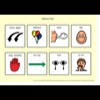
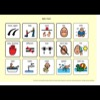
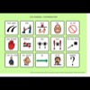
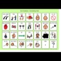
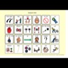
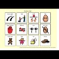
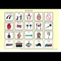
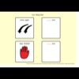

Foreword
The aim of this resource is to introduce you to low tech symbol based AAC to enable you to support children who can’t rely on speech to communicate to the best of their ability. Through communication we can express ourselves, learn, have fun, and be active members of society.
There is a lot of emphasis on communication partner skills in this resource. That is because communication does not happen in isolation – it’s a social act involving two or more people. The person who is communicating with the child who cannot rely on speech needs to develop a range of skills that will enable them to support that child to fulfil their potential.
Please note that this resource is not suggesting that low tech is ‘best’, or that low tech is a prerequisite to a more high tech communication aid. It is simply about valuing the role of paper based communication systems, and sharing lots of ideas and strategies to help develop and support them. You may well find that many of the ideas and strategies are useful when it comes to other forms of communication too. A range of resources that complement this book can be downloaded at acecentre.org.uk/symbol-charts
Acknowledgements
This resource was developed through grant funding from the Department for Education National Prospectus Grants Programme 2013-2015. This project involved a consortium of ACE Centre, Communication Matters and 1Voice.
Thank you to the people who allowed us to share their stories within this resource. Thank you also to Ruth McMorran and Marion Stanton of Communication Matters and Deborah Pugh for carefully reviewing the resources and their thoughtful comments. Finally, thank you to Rosaleen Mullan for sharing her wonderful communication chart ideas.
(c) Crown copyright 2015
(c) The copyright for Makaton, vocabulary signs and symbol graphics is owned by The Makaton Charity (www.makaton.org)
The Picture Communication Symbols (c) 1981-2015 Dynavox Mayer-Johnson are used under contractual agreement. All rights reserved worldwide.
SymbolStix Symbols (c) SymbolStix 2015 LLC
Widgit Symbols (c) Widgit Software 2002-2015 widgit.com
Any enquiries regarding the use and re-use of this information resource should be sent to enquiries@acecentre.org.uk
Chapter 1: What is Low Tech Symbol Based AAC
Communication
Communication involves more than just speech. We all use gesture, body language, tone of voice, eye pointing, and so on, to support our communication. A well timed roll of the eyes can sometimes communicate a lot more than a few choice words!!! As you will see, Augmentative and Alternative Communication simply adds some extra tools into this list of existing skills, supplementing and enhancing skills that are already present.
We communicate for all sorts of reasons and to achieve all sorts of different ends. We use it to tell people what we want, to express our opinions, to direct others, to ask questions, to learn, and to feel close to others. When communication is difficult for some reason, we can end up focussing on the problems of not being able to communicate what someone wants, and lose sight of all these other things. Hopefully this resource will inspire you to think about communication in its very broadest sense.
Low, Light and High Tech AAC
Right from the outset we can see that there is a lot of jargon about! ‘Low tech AAC’ is a pretty incomprehensible label – not a great start for something that is designed to help support communication! So time for a bit of jargon-busting…
AAC stands for Augmentative and Alternative Communication. AAC includes strategies (e.g. signing, gesture, etc.) and equipment (e.g. a symbol chart, an alphabet chart, a simple talking button, a more complex computer based voice output communication aid, etc.) that support or replace speech.
The reason that there are two ‘A’s’ in AAC, rather than it just being called Alternative Communication or AC, is to make the point that AAC or Augmentative and Alternative Communication is not just for people who cannot speak at all and need an alternative. AAC is also for people whose speech is not sufficient or clear enough for everyone to understand them all of the time. In other words, AAC can augment or support someone’s speech.
AAC is often divided into Aided and Unaided categories. Aided AAC describes any type of AAC that uses some sort of equipment, be it a pencil or a computer. Unaided AAC is communication that you do using your body with no other equipment. This basically means gesture and signing.
A full discussion about signing would require another book to do it justice, but you can find out more about different signing systems and languages here:
-
Makaton® makaton.org
-
SignAlong signalong.org.uk
-
BSL e.g. british-sign.co.uk
Aided AAC is then divided further into two or three categories, depending on who you speak to or what you are reading! Types of Aided AAC that you will hear about are low tech (at last!), Light tech and high tech. Some people don’t worry about the term light tech and just use low and high tech AAC. When they do this, the term high tech includes light tech. Others use the term ‘ basic high tech ’ instead of light tech.
Low tech AAC is AAC that uses some sort of simple equipment that doesn’t involve a battery. In a way it’s defined by what it is not, which is light or high tech AAC. Low tech AAC is often, although not always, made using paper. Examples of low tech AAC include objects of reference , symbol charts and books, alphabet charts, E-tran frames, etc. A better term might be ‘no tech’!


A small collection of high tech AAC devices.
Light tech AAC (or basic high tech AAC) is AAC that uses simple battery powered equipment. To find out more about what’s available, see Speech Bubble (speechbubble.org.uk).
The photograph below shows some examples of light tech AAC devices. The pen is included to give an indication of size. All of these more simple devices play back pre recorded speech .

High tech AAC is AAC that uses more complex equipment such as computers, tablets and iPads / iPods. High tech AAC options tend to make use of synthesised speech. To find out more about what’s available, see Speech Bubble (speechbubble.org.uk). The photographs in Gallery 1.1 show just a few examples of high tech AAC devices. There are many, many options out there, in all sorts of shapes, sizes and specifications.
Representing Meaning through Objects and Symbols
As you will see, low tech AAC comes in many shapes and forms. However, broadly speaking you will find low tech AAC based around objects of reference, symbols , whole words and letters.
Objects of reference are objects or things that are used to represent concepts (e.g. a plastic cup could be used to represent the concept of having a drink). Here is an object of reference that is representing a nursery classroom:
Objects of reference may be used to help someone remember something, to help them understand something, or to help them anticipate something that is going to happen. They can be used as a timetable to indicate what activity is coming first and what activity will happen next. An object of reference may also be used by an individual to express themselves.
Some people will start their AAC journey using objects of reference and then move on to photographs, symbols, or whatever works best for them. Others will always benefit from experiencing actual objects, but may still use other resources too. Of course, some people who use AAC may never require them.
CALL Scotland has produced an informative resource about objects of reference. Although aimed at schools, it’s a useful guide for anyone interested acecent.re/1DPC07x . The Brighton and Hove Learning Disability Partnership Board have also produced a helpful resource about objects of reference: acecent.re/1aDiIX7
Symbols are special pictures that are used to represent concepts e.g. a drawing of a person drinking out of a cup is used to represent the concept of having a drink. They are used both to support understanding and to help someone express themselves. Symbol based low tech AAC is the focus of this resource. You can read more about symbols in Chapter 3.
For individuals who are able to read, whole words and phrases can be used instead of symbols or objects to support communication. For those able to spell, alphabet charts can be used, enabling someone to generate words and phrases spontaneously. Of course, alphabet charts can be used alongside other tools at all stages to support literacy development. You can find out more about designing and using alphabet charts in Getting Started with AAC: Designing and using alphabet charts.
A Multi-Modal Approach to AAC
No one form of AAC is ‘better’ than another, and successful use of one form is never a prerequisite to a successful use of another. In reality, most people take a multi-modal approach, combining tools and strategies in a way that works best for them.
Beth is a young woman who uses AAC to support her communication. She now attends university, but made this film a few years ago to illustrate how she communicates. She has kindly given permission for her film to be shared here. You can find out more about Beth at bethmoulam.com.
Who Uses AAC?
AAC is used by people of all ages and abilities - from young toddlers to the elderly, from people with advanced degrees to those with learning difficulties. There are many different reasons why people need to use AAC to support or replace their speech. A person may have been born with a condition such as cerebral palsy or a syndrome such as Down’s syndrome or Angelman syndrome, have autism or an autistic spectrum condition, have a learning disability, have difficulties with speech and language following a head injury, stroke or brain tumour, have developed a progressive neurological condition… the list is endless. What unites this incredibly diverse group of people is the fact that their speech does not enable them to communicate in all situations or with all individuals without some extra support.
AAC can be used to help people understand what is said to them, to help people express themselves, or both.
AAC takes a lot of work to get started, and it takes a lot of work to develop and use over time. Stick with it… it’s worth it! Communication is what defines us and makes us who we are. It is how we make friends and develop and maintain relationships. It gets us what we want (well, some of the time anyway) and it enables us to be who we want to be.
Beth explains how her communication is truly multimodal.
Communication is a basic human right. AAC is a way of ensuring that everyone is able to experience this basic human right.
Melinda Smith, a Community Development Worker in Australia, who uses low and high tech AAC to support her communication, has said:
“Using AAC makes me feel like I exist, it gives me the power to make a contribution and it enables more people to communicate with me. Without AAC – I may as well be asleep.” (from toby-churchill.com)
Section 1: Meet Some Children Who Use Symbol Based Low Tech AAC
Ria

Ria is 5 years old and has a diagnosis of muscle eye brain disease. She has physical difficulties, some visual difficulties and has not developed use of speech to communicate. Ria uses a mixture of low and high tech AAC to support her communication.
Here’s Ria using a symbol based communication book to express that she wants Karen to blow her a “big” bubble!

Ria has now started at school. She has her own symbol based communication book that she takes to school with her. Of course, Ria can use her book to ask for things - but she can also do so much more than this. Using the symbols in her book, she can have a chat with her teacher and tell her mum about her school day. Ria really does have a lot to say!
Callum
Callum has learning difficulties. He isn’t able to use speech to communicate, but he can tell people what he wants and thinks by pointing to symbols. Before he had his communication book, it was sometimes hard for him to get his message across. However, that didn’t stop him – he took symbols from his visual timetable and used them to ask for things. Since Callum has had his own communication book, he has found it easier to communicate with staff and classmates about a much wider range of topics, and is communicating very effectively

Tamsin
Tamsin is eleven years old and attends a mainstream primary school. When she was three, Tamsin wore two wristbands – one with a symbol for ‘yes’ on it, the other with a symbol for ‘no’, and she began to respond to simple questions by looking at the appropriate band. She also had a collection of symbols that she could eye point to. This was formalised into a full communication book which quickly contained pages and pages of symbols, and access to lots of complex language. Tamsin is able to use her symbols to play, join in with discussions in school, and tease her brother! Here she is (aged seven) playing with her younger brother.
Tamsin’s communication system is so valued by her peers that when she was seven, she was nominated to represent them on the school council. Alongside her low tech book (which goes EVERYWHERE with her), Tamsin also uses a voice output communication aid.
This video, taken when Tamsin was just five years old, shows her sharing a story with a visitor using her communication book.
Tamsin shares a story with a visitor. Mum then shows Tamsin how she could expand her story. Tamsin accesses her communication book using eye pointing.
Tamsin’s literacy is now coming along so that she is able to use spelling to support her communication quite a lot of the time. But her symbols remain a useful back up for now.
Chapter 2: The Basics
Why can’t I just use a communication aid or a tablet?
The world of communication aid technology has come on so far in the last few years that some people question whether there is still a role for low tech (or paper-based) AAC. There is! Paper based resources are wonderfully flexible and can be used in so many different contexts. They have the great advantage of not requiring batteries, so they are always available, and with no screen to smash, they are pretty durable too. For some, paper based resources are a great back up to their high tech system (for example, when their system runs out of battery or when they are somewhere where the high tech system can’t be used - like bed or bath), and for others they are their main method of communication.
In reality most people who use AAC communicate using a range of different approaches that includes their own mixture of low tech AAC, sounds (or some speech), gesture, signing, drawing, writing and high tech AAC. For example, someone might use their eyes to draw your attention to the box of cereal they would like you to pass them, make a sound to greet a friend, and use their high tech AAC device to have a discussion around an issue that is important to them. Beth explains this beautifully in her video.
Janice Light and David McNaughton are well known researchers in the field. They stress that technology in and of itself is not important – what’s important is the communication. Technology is just one tool among many that can help us to communicate.
I know what my child wants / needs, why do I need to bother with this?
As your child grows up, they will want to make friends and communicate independently. It’s just not cool to chat up a girl with your parents interpreting! The work you are doing now will lay the foundation for more independent communication in the future. It may take time, but it is important to develop good, strong foundations.
Don’t forget that our children can surprise us! Children come out with all sorts of unexpected things. Having insisted on eating breakfast from their digger bowl for months on end they will suddenly announce that they want the pirate bowl this morning. They share stories from school or outings that we haven’t been a part of, or just notice things that we don’t always notice. Sometimes they will want to tease us – perhaps asking for some chocolate at breakfast with a glint in their eye - just to have fun and be cheeky. We need to give them the tools to make their choices, share their stories and play with language.
If everyone makes decisions on behalf of your child and never seeks their views or opinions, your child is likely to become frustrated at the very least, and, even worse, there is the danger that they will disengage and become passive. This can have huge implications for their learning and development.
I’m worried that AAC will make my child lazy about talking
This is a really common anxiety. However, all the research suggests that far from holding speech back, AAC can even encourage it.
For example, when Diane Millar, Janice Light and Ralph Schlosser analysed the literature in 2006, they found that following the introduction of AAC, no cases demonstrated a decrease in speech production, some showed no change, and most demonstrated gains in speech production.
Would you regard a child who is wearing glasses to help them see as being lazy? Probably not! It’s the same with AAC. It’s a set of tools that can support someone’s language and communication.
For some, use of AAC will be part of their journey towards speech. Whilst speech is developing, it can underpin the development of their language and communication skills. This means that language isn’t ‘put on hold’ until speech comes, resulting in long term deficits or delays. For others, use of AAC will be part of their lives forever. Either way, putting the work in now will only help someone to be a good communicator, however this is done, in the future.
If you would like to read some of the journal articles around this area, there is a great list of relevant articles here acecent.re/1G0IC2C. You will also find a good summary of the issues and research here acecent.re/1Ls09EV.
Every Journey Begins with One Step…
If you start by trying to use AAC all the time, it is likely to feel overwhelming and something that is better left until there is more time. However, as families change over time and the inevitable issues and challenges arise, the moment can never seem right for such a seemingly big undertaking.
Start today, but start small. Rome wasn’t built in a day! If you start small you can build on success over time. While the ultimate goal is for AAC to be integrated into the daily routine, this will take time and we all need to be realistic about this.
Set Yourself a Five Minute Challenge!
Can you find a five minute window in your busy day to use AAC alongside another activity?
-
Choose one activity and get started
-
Find an activity that feels right for you, your family, and your busy home life
-
Make sure the activity is something your child is interested in and enjoys
You will find lots of examples in Chapter 5. Here are some examples. Or have a go and make your own
Making Mistakes
Making mistakes is all part of how people learn. Toddlers don’t open their mouths and start speaking perfectly formed intelligible sentences. In the same way, a person learning to use AAC is going to make mistakes and take time to learn how to use the AAC. If communication goes a bit wrong, don’t worry. Just use it as an opportunity to learn.
Sometimes our expectations of how quickly AAC is going to work can be a bit high!
No Fail Activities / Errorless Learning
Getting started with AAC needs to be fun for everyone. In time, the use of AAC will hopefully develop into a robust communication system that can be used to talk about problems, do maths homework, and to have an argument about how much television it’s ok to watch! But in the beginning, we need to try and keep it fun and motivating. No fail activities are a great place to start.
No fail activities are activities where you can’t get anything ‘wrong’. For example, if you are playing a game where the child using AAC has to point to a set of symbols where each one tells you to do a different silly thing, there is nothing that they can get wrong. It’s a no fail activity that is just good fun. However, if you are feeling really hungry and accidentally point to the symbol of the drink rather than something to eat, this can lead to a feeling of having ‘got something wrong’ and frustration at being given the wrong thing.
This simple adaptation of the Simon Says game is an example of a no fail activity. There is no wrong selection, and whatever is chosen results in a fun and motivating outcome, or an opportunity for a nice chat together. You can always use the ‘stop’ symbol as a cue for the person doing the actions to stop in their tracks and freeze like a statue!

Choice Making
Giving choices through AAC can be very empowering. For a child with a complex communication disability alongside a complex physical disability, it can be a way that they begin to take control of their environment and those around them. This is so important for learning.
However, some children can find making choices a bit stressful. Remember that children don’t always know what they want, and that having made a definite choice, they may then change their mind. When getting started with AAC, this can lead to confusion as it may be unclear whether the child has just changed their mind (like so many do!) or has not understood the AAC system. Try not to put too much pressure on the child when presenting them with choices. It’s so easily done!
You may also have evolved other ways of making choices. It might just be quicker to hold up the two flavours of crisps on offer for example, and then give your child the one that they look at or reach for. That’s ok too. Not everything has to be done through a formal AAC system.
When getting started, try and keep choice making through AAC fun and light hearted.
One way of having fun with choice making is to ask the child to choose on behalf of someone else! Maybe they could choose what Daddy has for a snack for example. Depending on how enthusiastic (!) the person being chosen for is, you could put some funny items in amongst the options e.g. biscuit, banana, sock, with Daddy pretending to munch the sock that is chosen for him.
You could also encourage the child to make choices for a doll or teddy. What does dolly want to eat? What does teddy want to drink?
You know your child best. When getting started with low tech AAC, it’s all about finding the things that motivate and encourage your child to begin to get to grips with this new way of communicating.
Chapter 3: More About Symbols
What is a Symbol Set?
A symbol is a pictorial representation of a word or concept, and a symbol set is a collection of such drawings. Symbols differ from pictures or clip art in that they follow design rules in how they are drawn.
There are a number of different symbols sets that are in use in the UK.

Although Makaton®, PCS (Picture Communication Symbols), SymbolStix and Widgit symbols are perhaps the most commonly used, there are others available. Other sets that are sometimes seen include Bliss symbols (blissymbols.co.uk ), Pictogram symbols (pictoworld.com/index.html), Clarity symbols (liberator.co.uk/clarity-symbols.html), amongst others! There are also a number of freely available symbol sets around. A useful comparison of symbol sets can be found at: spectronics.com.au/article/symbol-set-comparison.
All symbol sets have their strengths and weaknesses, and it is worth spending time working out which set is most likely to meet the needs of your communicator and their environment.
When choosing a symbol set for use in a person’s low tech communication system it is important to take into account what symbols (if any) they are using elsewhere. For example, if they have a high tech communication aid or are using symbol based software or apps, you may want to aim to use the same symbols in their low tech system. It may be worth checking with staff at an early years setting, school, college, day centre, or similar environment that someone attends to find out if a symbol set is established there. If possible, it is helpful to be consistent so that someone is not having to learn multiple symbol sets. Having said that, people often end up mixing and matching to a greater or lesser degree, ‘borrowing’ missing symbols from other sets when needed.
Whatever the symbol set, think about including the written word with the symbol to help support literacy development, and to make it easier for an unfamiliar communication partner.
Some of the symbol sets offer special symbols for people with visual difficulties. Widgit offers a set of VI symbols (widgit.com/products/vi/index.htm) for example, and PCS offers a set of high contrast symbols (mayerjohnson.com/pcs-classic-high-contrast).
Note that for people with complex visual difficulties, tangible or tactile symbols may be considered. These are symbols based around shapes and textures.

The above picture is an example of a very ‘home made’ chart that uses personalised tangible symbols. It is also possible to produce tangible symbols using a Zychem printer - see www.zychem-ltd.co.uk.
You can find out more about the use of tangible symbols here library.tsbvi.edu/Browse/Category/15.
Symbols Look Hard to Learn
People who are new to the world of symbols often worry that they look hard to learn, and feel concerned that they will be too difficult for their child.
Some words or concepts are very easy to draw or represent as a picture. For example, it’s pretty easy to draw a picture of an elephant that looks like an elephant. Other words are much more difficult to draw. For example, there is no obvious picture of ‘more’ or ‘help’ or ‘finish’.
Frustratingly, it is the words that don’t make pictures easily that are often the most important when we communicate. Elephants do come up in conversation occasionally, but words like more, help, and finish are ones we use every day no matter what we are talking about. They are also the sort of words that young children start using very early on, and therefore the sort of words that we want to get started with straight away using AAC. As they are so important, we tend to refer to these words as ‘core’ words.
If we only make charts using the words that are easy to draw, we are seriously limiting the language development of the young person communicating through AAC. Right from the very beginning, we need to include the important core words to give children the very best chance of communicating effectively. We don’t just list objects when we talk, and it’s important that we don’t just give children using AAC charts full of the easy-to-draw objects. You will see plenty of core words in the ‘getting started charts’ included in the example charts in Chapter 5.
Research does endorse this approach. Researchers have suggested that ‘usefulness’ of the symbol is more important than how easy the picture is to learn when it comes to children learning to use the symbol. And a word like ‘more’ is certainly more useful than ‘elephant’ on a day to day basis!
To help children learn to use these symbols, we need to use them ourselves as often as possible when talking to them. This is the very best way of making them easier to learn. See Chapter 8, Communication Partner Skills, for more information.
How do I make resources using symbols?
The easiest way to make a symbol based communication chart is to use specially designed software. There are a number of different software products available in the UK. One thing to look out for is what symbol set they use.
Examples of specially designed chart making software in the UK includes:
-
Boardmaker Plus! V6 or Boardmaker Studio - available from, e.g., toby-churchill.com
-
Communicate in Print 2- available from, e.g., widgit.com
-
Matrix Maker Plus - available from, e.g., inclusive.co.uk
Alternatively, if you already have software for voice output communication or symbol recording (e.g. The Grid 2, Mind Express, Communicator, Symwriter, etc.), or are intending to purchase such software, you may be able to use this to develop and print charts.
Sometimes you can access chart making software through your local Speech and Language Therapy service or through a child’s educational environment. There are also a few counties that offer access to such software through their library service. You could contact your local library service to find out if this is available in your area. Some charities / nonprofit organisations also offer access to software.
However, just for getting started, you could make use of some of the charts we have given as examples in Chapter 5 . All the charts shown are available to download from ACE Centre’s website (acecentre.org.uk). To protect your charts, it may be worth considering laminating them. If you are in settings with lots of overhead lights, matt laminating pouches may make it easier for all to see the symbols. Alternatively you might want to print them using ‘indestructible’, ‘waterproof’ or ‘non-tear’ paper.
What about Photographs?
There are no absolute rules about when to use photographs and when to use symbols. Photographs can be easier to learn, and may be a stage on an individual’s journey towards using symbols. For some children, however, the detail in a photograph can make it difficult to perceive the image and they may find it easier to see a symbol.
Photographs can be a great way to represent specific things on a communication chart. For example, it is probably much more straightforward to use a photograph of a person (Mum, Dad, etc.) than to use a symbol to represent them. Similarly, it is likely to be much more straightforward to use a photograph of a family pet than to try to use a symbol to represent them. For some children, photographs of specific objects and people in their environment are going to be the most useful supports to their communication. For some children on the autistic spectrum, photo-based charts can also be very helpful for talking about emotions.
But if you want to use describing words, or ask someone for more of something, or indeed ask them how their pet is, then photographs won’t be enough. This is where symbols really come into their own.
Photographs can have another role to play in communication though. They are a great way to share stories share stories (link) about people, activities and events.
However you decide to use a photograph, make sure it is a clear as possible. It is much easier to recognise a photograph of an object or a person if it is taken against a clear background rather than against a busy background like a toy shelf. This is especially important when using photographs on a communication chart, as they can end up being really quite small.
This simple example demonstrates the difference between photographing a game against the toy shelf versus on a plain background.


This photograph is taken against a busy toy shelf. The game itself is rather lost amongst all the clutter.
Chapter 4: Choosing Vocabulary
When creating your own charts, one of the first considerations is what words to use! This chapter takes a look at the thinking behind what words to include. Chapter 5 then provides lots of practical examples that can all be downloaded from ACE Centre’s website (acecentre.org.uk).
What Words Should You Use?
When getting started with AAC, the temptation is often to focus on choice making , but it is important to remember that communication involves so much more than just choosing or asking for things!
It can be useful to think about the kind of things that young speaking children say, and then ensure that people who are using symbol based AAC have a way of saying the same sort of thing.
This video is a good reminder of what communication is all about. Ruben’s Mum reads aloud a series of options to Ruben, and he indicates ‘yes’ when he hears the word or phrase that he wants to say. This method of accessing AAC is called auditory scanning - it is a form of listener mediated scanning .
Ruben and his Mum share a special moment through Ruben’s low tech AAC.
Even very young children do much more than just ask for things. They will use greetings and partings like, “hello”, or, “goodbye”. They may talk about who things belong to, or who they think they should belong to! Anyone who has spent time around a toddler will be familiar with the infamous “mine” or the statement “my biscuit”. Young children may talk about the fact that there is more of something, or notice that something is happening again. They may also remark on the fact that someone or something isn’t there anymore (e.g. “Nana gone” at the end of a visit). They may talk about actions (e.g. “stop”, “eat”, “go”). They may also use their words to describe things (e.g. “messy”, “pretty”, “noisy”). Children use questions to learn about their world: “why?” may feel very familiar to some, or they may ask “where” something has gone. They may use their words to give information (e.g. “I made it”, “here’s a card”). They may also use their words to direct others (e.g. “you do it”, “Mummy help”, etc.).
These examples are far from an exhaustive list. Children can say so much! Even very young children with a relatively small vocabulary are extremely creative and have lots of different types of things to say. From Chapter 1, watch this video of Tamsin , aged five, telling a visitor about something unexpected that had happened to her!
As children enter an educational environment, they will also use language in more sophisticated ways. They will need to play alongside others, deal with social conflict, negotiate, plan, give opinions, reason and predict, to name but a few!
This is why we need to think carefully about the words we are giving to people who use symbol based AAC. A simple set of nouns (or things) won’t enable them to learn to use language in all these different ways. It simply will not suffice!
The Problem with Nouns (Things)!
Here is a communication chart that someone might take to a café:

While it is possible to ask for lots of things using this chart, e.g.:
-
they could ask a cup of tea with milk and one sugar by selecting the symbols “tea milk 1 sugar”
-
they could ask for a biscuit “biscuit”
they could not really use this chart to do any of the other types of communication discussed above. Indeed, once they have requested what they want to eat or drink, there is not a lot else that they can say with the chart.
Here is another chart that contains the same vocabulary, but has just a few extra words. The extra words are ‘core’ words. These are words that would be useful whatever the situation. With just a few of these words, someone can now express themselves to a much greater degree.
As above, someone can still ask for a cup of tea, or a piece of cake. However, there is now lots more they can say. For example, they could ask if “you want cake?”, if you would like a “different cake”, or enquire if “you like the cake?”. They could tell someone that it’s, “my cake”. They could express that they “like the cake” or that they “do not like the tea”. They can tell you that there’s “no milk” or that they “do not want a biscuit”. They could get you to help them cut their cake by asking for “help”. They could draw your attention to something funny going on in the café by saying “look”. They could comment that you are eating “more cake”, or ask for “more” themselves. Then they could tell you that they have “finished”.
Core Words
When thinking about vocabulary (or words) within AAC, we tend to divide it into 'core' words and 'fringe' words.
Core words are words that are useful whatever the situation. For example, words like ‘more’, ‘help’, ‘not’, ‘like’, ‘look’, ‘go’ and ‘want’ are useful whether you are playing with bubbles, doing an art project or off on a trip to a soft play centre. Research shows that speaking toddlers rely predominantly on core words to communicate, and that a similar set of core words is used by speakers of all ages.
Core words cover a wide range of grammatical forms - e.g. nouns, action words, describing words, etc. On the second café chart above, the core words are shown with a thicker border.
As discussed in Chapter 3, it is not always easy to draw a picture of a core word . The difficulty of drawing a picture to represent such concepts as ‘more’ or ‘want’, for example, should not deter us from including these core words in communication books and charts. With the right support from communication partners , people can learn to use these well. Indeed with some short core words, it is arguably as easy to learn the written word as the abstract symbol. In these situations, you may just want to teach the actual word rather than the symbol. The word can be introduced and taught in the same way as the symbol would be.
Fringe words are the words that are more topic or situation specific. For example, words like ‘snack’, ‘spread’, ‘plate’, ‘sauce’ are useful at snack time, or if you are discussing food or planning a meal, but not so useful if you are watching TV. Fringe words tend to be much easier to draw a picture of. However, if we rely solely on fringe words when producing charts and books, we can end up with something that is very limited in its usefulness. On the café chart above, the fringe words have the thinner border, and relate specifically to the café situation - e.g. tea, coffee, milk, sugar, etc.
In Chapter 5, you will find some examples of core vocabulary charts.
In an ideal world, a symbol based communication chart or book will contain a mixture of core and fringe words.
Here are some examples of core vocabulary lists:
-
Gail van Tatenhove has produced some handouts on vocabulary lists – see vantatenhove.com/ papers.shtml
-
There are various vocabulary lists here aac.unl.edu/vocabulary.html
You will also find a suggested core vocabulary in the ACE Centre guides Developing and Supporting a Communication Book and Look2Talk , and core vocabulary used throughout the PODD.
Yes and No
You will see that the example charts provided don’t include the symbols / words for ‘yes’ and ‘no’. This is because children often have their own preferred ways of communicating ‘yes’ and ‘no’ that do not involve the use of symbols. However, there are times when you may want to think about including ‘yes’ and ‘no’ on a chart, particularly if the child’s own method is not always clear to unfamiliar communication partners. In such cases, where a communication partner is left feeling unsure, it can be useful to have a back up way of communicating yes and no.
Alongside ‘yes’ and ‘no’, it is useful for the child to have a clear way of indicating ‘I don’t know’. Sometimes the yes / no response isn’t clear because the child genuinely doesn’t know the answer, or doesn’t have a strong view. Again, if ‘I don’t know’ isn’t something the child can consistently communicate clearly, you may want to consider including such a symbol.
A Note on Manners
As parents, we are all keen to bring up well behaved children with good manners. Therefore having ‘please’ and ‘thank you’ on a communication chart from the very beginning can feel important. This is a very personal matter, and there are no hard and fast rules! One note of caution, however, is that when there is only limited space for words and symbols on a chart, it may be worth not including ‘please’ and ‘thank you’ at this time. They are not always the most motivating words for a child to use, and do take up quite a lot of valuable space on a chart. If you are feeling worried about leaving these words off the chart, you can always add them in yourself – for example if the child points to ‘more’ to ask for more bubbles, you could say “more please” as you blow some more bubbles, so that they are being exposed to the words.
Chapter 5: Ideas and Resources to Get Started
Getting started with low tech AAC can feel daunting! This section gives you some ideas about how you might begin. It includes examples of communication charts that you can download from ACE Centre’s website (acecentre.org.uk) and use to get started. However, you will soon want to adapt these and make your own.
Getting started with low tech AAC is all about finding a way of bringing AAC into daily activities that are relevant to you and your family. It’s about finding communication opportunities that are motivating and fun.
These charts are one small step on the journey towards developing a full communication system based around symbols.
Remember – the charts are there to be used by you. If the child begins to join in, that’s great, but don’t force them to use the symbols. They need to become really familiar with the symbols and how to use them. That can only happen by you using them yourself as you talk to your child. You really are the key to getting started with AAC. Your skill at pointing to the symbols while talking to, and playing with, your child is what will get AAC going. You can read much more about this in Chapter 8, Communication Partner Skills.
The example charts are designed to be accessed by pointing to the symbols. However, you could cut the symbols out and arrange them on an E-tran frame for eye pointing communicators. You could also scan through the symbols for those using listener mediated scanning , although make sure that you are consistent in the order in which you offer the symbols.
The communication charts shown below are all made using PCS symbols. However, on the ACE Centre website you can also download the equivalent charts made with Widgit and Symbolstix symbols.
There are a set of words that we use across huge numbers of different situations – these are known as ‘core’ words . In Section 1 of this Chapter, you will see some example core vocabulary charts . Then in Section 3 of this Chapter, you will see examples of how you can design a chart to support a specific activity . These charts all contain some core vocabulary too.
Some of the charts have examples of things you could say using the charts. This is just to give you ideas of the range of things you can say with the symbols. It is not intended to be prescriptive, and it certainly isn’t comprehensive! A few charts also have video examples illustrating their use.
Try and choose a chart that feels a step ahead of where you think your child is. This will enable you to demonstrate the next steps as you use the chart. It’s what we do all the time with speaking children – we repeat back what they say, adding an extra word. We are all natural language teachers! You can always blank off a few symbols if you feel there are too many, and reveal them gradually. See Chapter 8 for more discussion around this area.
Once you’ve all gained confidence in using a few charts like the ones below, the next step will be to begin to put together a communication book containing a wide range of core and topic vocabulary. See Chapter 9 for more information.
Section 1: Core Vocabulary / Commenting
A great way to get started with low tech AAC is to simply print off a communication chart of core vocabulary and use it whilst chatting in whatever situation you find yourself. It’s a way of commenting on what’s going on, and what your child is interested in.
The great thing about a core vocabulary chart is that it’s not tied to any specific situation or event.
You can incorporate simple words like ‘more’ and ‘stop’ into so many activities - e.g. for talking about watching “more television”, or observing that they are bored and want to “stop” the activity. As the charts get more extensive, you will have access to words that enable you to describe what’s going on or how the child might be feeling, offer help, ask a question, and so on.


The charts won’t give you every word you need, nor are they intended to. You simply point to the symbols that are there as you chat.
Section 2: Playing with Toys
Play is a great opportunity for language learning and development. The key is to watch what toys your child enjoys and try to bring AAC into that activity. The charts provided aim to give some ideas just to get you started.
AAC could even make some toys a lot more interesting. If your child has a physical disability alongside their communication disability, AAC may give them real control over their play for the first time.
We once worked with a girl who had lots of lovely toys, including a doll. She had a doll symbol, so she could choose to play with it. But she rarely chose the doll symbol, and the doll stayed on the shelf. Instead of just having a symbol chart full of toys to choose from, we made up a communication chart all about the doll itself. It had symbols like wash, change, sleep, and bottle. Mum started to get the doll out and point to the symbols. The little girl soon joined in too. All of a sudden the doll was never on the shelf!
With the help of Mum, she played and played with her doll. By pointing to the ‘change’ symbol, the little girl told Mum that her doll needed a new outfit. Together they changed her clothes. By pointing to the ‘bottle’ symbol, she told Mum that her doll was hungry. Mum helped her to hold the bottle to give her doll a feed. By pointing to the ‘sleep’ symbol, she told Mum that her doll was ready for a nap, and together they tucked her up in bed.
The little girl’s doll became incredibly important to her. Everywhere that little girl went, her doll went too! Her doll even had a place at the family dinner table. By giving the little girl access to the language she needed to play with the doll, her play was enriched, and she was given the opportunity to form a close attachment to a doll just like any other young child.
This section contains lots of example charts. Hopefully they will inspire you to create charts that enable your child to play more actively with toys that they particularly enjoy.
Turn Taking
A lot of playing with toys and games involves turn taking. You could bring in a simple chart to so many activities which just enables you to talk about whose turn it is, or who should be having a turn! This personalised example allows us to talk about when it is Mummy’s turn and when it is Edward’s turn.

Bubbles
Bubbles are popular with lots of children. Here is a simple chart that you could use to point to whilst playing together. You will notice that some of the symbols are repeated from the Core 8 chart. The repeated symbols are in the same place to keep things as consistent as possible.

Even with just eight symbols, you can find a lot to say. You could say that you “like the bubbles”, agree to “blow” or “blow more”. You could say “look at the bubbles”. You could notice that the bubble has gone “pop” and comment “uh oh!”. You could talk about continuing the activity - “more” or say that the mixture is “finished” or it’s time to “stop”.
Here’s a simple demonstration of the chart being used.
A simple demonstration of how you could use the bubbles chart.
Here’s another chart for playing with bubbles. This one has a few more symbols available and contains all the vocabulary from the Core 15 chart.

You could ask for “more bubbles” or agree to “blow more”. If the child reaches for the wand you could say that you can see they “want the bubbles”. You could comment that bubble has gone “pop” and say “uh oh!”. Or, if the bubble has floated around for ages, you could notice that it has “not gone pop”. You could notice that there are “lots of bubbles”. You could say “you catch it”. You could draw attention to bubbles “Wow! Look at the bubbles”. You could tell someone it’s time to “stop blowing – we need more mix”. You could ask a question – “I have a question. Do you like the bubbles?”. You could offer to “help blow the bubbles”. You could talk about turns – “my turn to blow” or “your turn”. If you noticed the child looking bored, you could say “time to do something different” or “let’s stop playing with bubbles”.
A simple demonstration of how you could use the bubbles chart.
Balloons
Blowing up and letting go of balloons is another activity that some children enjoy – others can’t bear the noise. It’s all about finding activities that suit your child.
This chart contains some of the symbols from the Core 8 chart.
Again, there is so much you can say with this chart. You could agree to blow up “more balloons”. You could agree to “let it go” and draw attention to it whizzing around the room “look”, then comment “uh oh!” if it lands in a tricky place. You could choose a balloon and comment that you “like” the colour, or draw the child’s attention to the colour – “look a red balloon”. You could “blow more” (and more and more as the balloon gets bigger and bigger!). You could agree it’s time to “stop playing with balloons”.
Blocks
Here’s a chart for playing with blocks. It contains some of the symbols from the Core 8 chart.
Even with eight symbols you can say a lot of different things. For example, you could draw attention to the tower “look, tower”. You could agree to add “more blocks”. You could talk about how you “like” what they’ve made. Or you might “like” the colour of the chosen block. You could decide that the “tower is finished”. You could decide to “knock it down”, and comment “uh oh!”. You could agree to play some “more” or decide that it’s time to “stop playing blocks”.
This chart is also for playing with blocks, but contains a wider range of symbols and incorporates the Core 15 chart.
Here’s just a few ideas of what you could say… You could say you “want a blue block”. You could decide to add “more blocks” to the tower. You could agree to “make something different”. You could “knock it down” and say “uh oh!”. You could decide to “make a big tower” or disagree and say that it’s “not big”. You could admire the creation – “wow” and say that you “like it”. You could decide that “my tower is finished”. You could offer to “help” with “your blocks”.
Trains
Is your child mad about trains? Then that’s a great place to get started. Here’s an example of a chart designed to be used with a simple wooden train set. The chart contains the core words from the Core 15 chart and some extra words along the bottom that are particularly useful for trains.

You could say that you “want a train”. You could ask someone to “help me”. You could say that you “want more trains”. You could notice that the other person has a “different train”. You could comment that you “like it”. You could warn - “do not crash”. Or agree, “you go”. You could comment “uh oh!”. You could ask a question - “I have a question. Shall we go fast?”. You could agree, “let’s go there”, decide to “go slow”, or “stop”. You could plan to “stop at the station”. You could comment that this one is “my train”. You could say “look, yours crashed” or “wow, fast!”. If the child seems to have had enough, you could say “let’s stop playing trains”.
Dolls
Playing with dolls / teddy bears can be great fun too. Here’s a chart that contains some symbols from the Core 8 chart.

You could talk about how you can see how much the child “likes” the doll. You could draw attention to something by saying “look, here’s some clothes we could try”, for example. You could decide to “change dolly’s clothes”, and to “change clothes again”. You could give dolly a “bath”, and comment “uh oh!” if water gets splashed in her eyes. You could agree it’s time to “stop dolly’s bath”. Once she’s dry you could give her a “bottle”. She might “like her bottle”. You could give her “more” to drink. By then it might be time to “stop” playing with dolly!
Here’s a very young Tamsin playing with her doll using a similar chart. Tamsin is eye pointing to the symbols, and communicates “yes” by looking to her left.
This chart is also designed to be used with a doll. It incorporates all the symbols from the Core 8 chart and contains a few more fringe words to use with the doll.

Here are a few ideas of things you could say with the chart… You could say “look, dolly is sleeping”. You could wake her up and give her a “hug”. Dolly might “like the hug”. Perhaps dolly is hungry and needs you to “feed dolly”, but oh dear, “dolly doesn’t like it”, perhaps we should “stop”. Maybe dolly “wants to eat something different.” Or perhaps “dolly wants her bottle”. You could discuss whether she has “finished her bottle” or whether she wants “more”. You might want to give dolly a “bath” or “change clothes”. Maybe you need some “help with changing the clothes”. If the child is getting bored, you could agree its time to “stop playing with dolly”.
Dressing up
Dressing up is an activity that some children adore. These charts are based around dressing up as a princess, but you could easily adapt the ideas for other types of costumes.
This chart contains some of the vocabulary from the Core 8 chart.

You could look at the different items together and talk about whether you “like” them. You could decide to try a “different dress” or a “different bag”. You could put on “more” and “more necklaces”, for example. Or decide that you are “finished”.
This chart contains the symbols from the Core 15 chart alongside some additional dressing up symbols.
You could look at the dressing up items together e.g. “look there’s a tiara”, “pretty ring”, “wow, that is pretty”, “let’s find a different necklace”. Or while dressing up there’s so much to say. You could “look in the mirror”. You could agree to “put on a different dress” or to “take off the ring”. You could comment that you “like the shoes”. You could observe “look! more necklaces” and offer to “help with the necklace”. You could decide to “take a photo” and then have a “look at it”. “Uh oh! That’s a bad photo. Let’s take a photo again”. You could say “I have a question – where is the bag?” and then agree to you will “go and get it”.
You could discuss that someone would be a “good princess”. You could agree it’s time to “stop dressing up”.
For slightly older child, putting on make up together might be an enjoyable form of dressing up. Here is an example chart that contains symbols from the Core 15 chart, plus lots of extra symbols related to make up.

The chart can be used in a very similar way to the princess dressing up chart above.
Mr Potato Head
Mr Potato Head is another old favourite – this chart gives access to lots of vocabulary and incorporates the Core 15 symbols.

Again, there’s so much you can say with just a few symbols. You could use this chart to talk about what bits of Mr or Mrs Potato Head you are going to “put on” or “take off”. You could decide to “put on a different nose” or a “funny nose”. You could say that you “want that nose”. You could comment on what Mr Potato Head looks like – “funny” or “not funny”, or talk about whether or not you “like” the chosen item. You could draw a child’s attention to some other options, “look, there are more eyes to choose from”. You could offer to help, “I’ll help”. You could say “uh oh!” if something falls off or lands on the floor. You could ask a question e.g. “I have a question. Do you like his nose?” You could decide to play with Mr Potato Head “again”, or to “stop” playing with him.
Section 3: More Imaginative Play
Imaginative play describes play where children are using role play and pretending. Imaginative play is a great way for children to learn about the world, and to experience some control over it. Imaginative play begins by being very like real life, but as children grow and develop, it may become more creative and take on more of a story.
A lot of the play described in Section 2, Playing with Toys, is of course imaginative. This section is just offering some further examples, where the story telling element of the play is stronger. You might be playing with a dolls’ house and creating an imaginary life for all the inhabitants, or going on a pretend train journey, or acting out more of a story whilst dressing up as the different characters.
Tea parties are popular forms of imaginative play for young children. A tea party mimics what goes on in the home, but puts the child in control. You can use pretend or real cups and food – whatever suits.
This is an example of a simple tea party chart. It includes some symbols from the Core 8 chart.

You can talk about how “teddy wants tea”. Dolly might “like her biscuit”, while Teddy needs something “different”. Everyone will need plenty “more tea” along the way, especially when they have “finished” their cup. You could draw attention to something, “look”, or offer to “help”.
Or for a more sophisticated tea party(!), this chart contains the symbols from the Core 15 chart.
Doctors and nurses can be a great opportunity to bring in a communication chart. If you have a medical kit, the child can use the chart to indicate where to stick plasters or bandages. They can instruct you to take medicine – yuck! If someone was very ill, you could use a toy phone to call an ambulance, complete with siren noises. You could introduce the concept of ‘pain’ within this play, which could later come in useful when making a communication book page around problems or illness. Here is an example chart that contains the symbols from the Core 15 chart.
Section 4: Playing Games
Communication charts can really enhance games, giving lots more ability to talk about what’s going on in the game, and to plan and discuss your move. You can discuss whose turn it is, make comments on the game, discuss who is winning and losing, etc.
This is an example of a chart to use alongside the game Kerplunk. It contains all the symbols from the Core 15 chart.
This is an example of a chart that can be used alongside the game Snakes and Ladders. It contains all the symbols from the Core 28 chart.
Section 5: Active Play
A lot of fun can be had in getting other people to do silly things. You could play a simple version of Simon Says, where you have to do whatever action the child points to. Include actions that your child can either join in with or finds especially funny! This is a great activity to do with siblings or friends. As always, you will need to model how to use the chart by using it yourself and then doing the action, before expecting that they join in. Here is a very simple chart that contains some of the symbols from the Core 8 chart.
You can even use symbols in the playground. Just the simple more and stop Core 2 chart above could be useful. While pushing your child on the swing for example, you could pause and see if they want “more” swinging or to “stop” swinging. You can then use this as an opportunity to model the meaning of more and stop. If you try and take them off the swing and they struggle against it, for example, you could simply say, “you are telling me more swinging” while pointing to the symbol, and carry on pushing.
The turn taking chart can also work well at a playground, or out in the garden with outdoor toys.
Section 6: Reading and Telling Stories
Reading stories together has so many benefits. As well as just being a nice thing to do together, it really does underpin literacy development.
Did you know that young children often choose to re-read the same story many, many times? And that through this repetition, they are actually doing some really important learning? If we are in charge of choosing it’s all too easy to pick a new story each night. As adults we enjoy variety, and our natural inclination is to read something new. Rather than reaching for something different every night, try and make a point of re-reading stories that your child has enjoyed. It will give you lots of chances to practise your use of AAC alongside the book too!
If you were feeling creative, you could make your own story book using personalised photographs. You could print off some pictures and stick them into an exercise book and then write some simple text under the photograph. For example, you could make up a book about the people in the child’s life and simply write under each picture the name of the person in the photograph followed by “loves me” e.g. “Nana loves me”. On the last page you could stick a photograph of the child and write something like “everybody loves me”. Or you could make up a short book about an outing, a birthday or a holiday. You can do the same sort of thing using one of the photo album / photo printing websites, or even an app .
This is an example of a chart that could be used to talk about any book you are reading, whether a homemade one, an old favourite from the bookshelf, or a new read from the library.

With this chart you could talk about any book. For example, you could discuss who is going to “turn the page” or who is going to choose the story - “I” or “you”. You could offer to “help” the child if they are struggling to lift a flap, for example, or turn the page. You could draw the child’s attention to something on the page “look”, and comment “wow!” or “uh oh!”. You could comment that the “book is finished” and agree to “read the book again” or decide to choose a “different book”. You could talk about how you “like” or “don’t like” something in the story, or the book itself.
You might also want to make up a chart to use with a specific book. This is worth doing if it’s a well worn favourite, although making charts for every book on the shelf is probably a bit unrealistic. That’s why a generic reading chart is so useful.
Here is an example of a chart designed to be used specifically with the story Dear Zoo by Rod Campbell. It incorporates the symbols from the Core 15 chart.

Another fun activity can involve creating stories. You could make up a chart, or a series of charts, that a child could use to make up their own stories, or ‘fill in the gaps’ from a range of choices. You could even go on to use symbol based word processing software (e.g. Symwriter from Widgit www.widgit.com) to ‘publish’ the story! Alternatively, you could just write it out on a piece of paper and re-read it together.
Here’s an example of a simple chart that would enable you to create some fun stories. Your child might be extra motivated to create stories involving family members or characters from a favourite television program or storybook.

Section 7: Watching Television
Television is a part of many people’s daily life, and it can be both useful and enjoyable. If there is a quiet moment while your child is watching television, perhaps you could join them for a couple of minutes and chat about what they are watching.
Here is a chart to chat about the television program Peppa Pig. It contains all the symbols from the Core 8 chart. Note that due to copyright issues, it doesn’t contain photographs of the actual characters, but if you were making this chart for yourself you could add them in from the Internet. For those of you that don’t know Peppa Pig(!), it’s a story about a family of Pigs called Mummy Pig, Daddy Pig, Peppa and George. There are lots of other families who come into the stories, all based around animals. The stories are very simple, but tend to involve the odd gentle mishap. While you could make a chart that was much more complicated, just these words would give you plenty to talk about during any episode.
There’s a lot you can talk about. For example, you could say “Look!, there’s Peppa” or “Look, Mummy Pig.” If something has gone wrong you could say, “Uh oh!”. In many episodes you might find yourself commenting, “Daddy Pig is funny” or “funny Peppa”. You could notice that “Mummy Pig is happy” or that “George is sad”. Perhaps you, “don’t like George feeling sad”. If your child had a favourite character, you could easily add them onto the chart. For example, if they really liked Danny Dog, you could have him on the chart. It would then be a great opportunity to spot him during any episodes by saying, “Look! Danny Dog”.
Alternatively, if your child likes watching lots of different programmes, why not use a chatting chart alongside any programme. Here is an example. It contains all the symbols from the Core 8 chart.
This chart that should allow you to talk about lots of different programs. You can make comments, talk about feelings, discuss what to watch, offer to help with the remote control, etc.
Section 8: Arts and Crafts
Arts and crafts can be a great way of realising the power of communication.
A lot of fun can be had with some simple colour symbols. For example, in a colouring activity, your child could direct you to colour in a picture for them by telling you which colour to use for each element. Siblings or peers can also take it in turns to tell each other what colour to use.
This is an example of a much more complex chart that would enable you to talk about and plan all sorts of craft activities. It incorporates all the symbols from the Core 28 chart.
The short video gives a demonstration of how you could use this sort of vocabulary.
A demonstration of how you could use a much more complex chart
Section 9: Singing
Singing together, whatever your vocal ability, is an activity that many children enjoy. They are much more forgiving than X-Factor judges!!!
You could set up a simple chart where you plan what to sing. You can sing “more” of something or “stop” singing it, and comment on what you song “like”.
An example ‘Singing chart’:
The examples in this chapter are all based around nursery rhymes, but for slightly older child, you could replace the songs with something more age appropriate. You could always ‘sing along’ to tracks on your mp3 player together.
Here is an example of a chart you could use with the song Old Macdonald had a Farm. Together you can choose what the next verse will be about. You can sing “more” or “stop” singing. You could plan to sing something “different” or to sing a favourite verse “again”. You could comment that you “like” the song or the singing.
Here is an example of a similar chart to use with another great action song, The Wheels on the Bus:
Section 10: Enjoying Photographs
Children often love looking at photographs of themselves or loved ones, or looking through photographs of a special outing. This is so easy now with smartphones and tablets.
This could be a lovely opportunity to bring in a communication chart. Here is an example of a simple chart for chatting about photographs.
Section 11: Daily Routines
It’s great if you can try and bring AAC into some of your daily routines, as, by their very nature, they are things that happen regularly.
If you have access to a laminator or can tape a chart inside a plastic wallet, then bath time can be a great time to have fun with a communication chart.
You could base a chart around playing with a favourite bath toy, similar to charts above.
Alternatively, you could develop a ‘bath play’ chart. This example chart includes the symbols from the Core 8 chart.
Section 12: Spelling
While this resource is all about symbol supported AAC, all children, regardless of their current ability, should be given the opportunity to explore letters and spelling.
A simple alphabet chart could be used to write ‘nonsense’ words – perhaps writing a pretend shopping list as part of a game. You could also blank off lots of letters, leaving just those of the child’s name, and practise spelling their name together. This gives great exposure to letter sounds and phonics, and experience in combining letters together. For this reason, it’s a good idea to include an alphabet chart in any symbol based communication book that you make.
This video shows Ethan doing some early writing. He is able to communicate yes by looking up, and look to the right for no. He uses Listener Mediated Scanning to access the alphabet. Although Ethan uses a symbol based communication book for his face to face communication, this therapy activity gives him experience of writing using letters to help develop his literacy skills.
Ethan selects letters within an early writing activity.
You can find out much more about using and adapting alphabet charts in the Getting Started with AAC: Designing and Using Alphabet Charts resource.
Here is an example of a simple alphabet chart that is set out in alphabetical order:

This alphabet chart mimics the QWERTY layout found on a computer keyboard:

Chapter 6: Chart Design - More to Think About
There is a lot to think about when designing a communication chart. Trial and error is an important part of the process. It is helpful to make careful observations about what seems to work and what does not, and to modify your chart design accordingly. As a general rule, try and involve the individual who will be using the chart in its design as much as is possible.
Labels
Where to put the symbol’s label, and how big to make the writing, is worth a bit of thought.
The label can appear above or below the symbol, or even alongside it.
The decision on where to put the label will be influenced by how someone selects the symbols on the chart. As the apple example below demonstrates, if someone is pointing to a symbol using a finger or fist, their hand may obscure a text label that is below a symbol. This can make things harder for the communication partner. Of course, if many of the communication partners are not literate (for example peers who cannot yet read), then you will also want to make sure that they have a clear view of the symbol that is being selected.
Consistency
When creating a communication chart or book it is helpful to be as consistent as possible in your layouts. This enables people to use their motor learning when selecting symbols.
Do you remember the first time you tried to use a QWERTY keyboard? It seemed to take forever to find a letter, whereas after a while you find your fingers automatically moving towards a letter without too much thought. Moving symbols around all the time can mean that approaching a communication chart is a bit like approaching a keyboard layout for the first time, every time.
If we are always changing the location of symbols on communication charts, we are making it more difficult for people to make use of their Automaticity to make selections. By contrast, if when designing a chart, we always put ‘more’ in the top left hand corner, someone can begin to learn it is there and their hand can begin to travel towards it without them having to give it too much thought.
Another thing that can help with motor learning is to plan for the future when designing a communication chart. If you feel that someone can only cope with ten symbols for now, but that you would like to move them on in due course, one option is to create a chart with ten cells now, and then a chart with

twenty cells later. However, as shown in Gallery 6.1, another option is to create a chart with twenty cells now, and simply blank out ten of them – in whatever pattern works for you. This means that as the number of symbols is increased, the person does not have to re-learn the location of symbols.
Layouts
Communication charts can come in all sorts of shapes and sizes. Although the most common are probably in a simple grid arrangement, there are many reasons for choosing to make a different shaped chart.
Dinner mats can be a fun way of bringing symbols into the eating environment whilst leaving space for the actual food!

Similarly, horseshoe shaped charts can also be used to put symbols around a toy or art activity. This chart has been designed to be printed on A3 so that it surrounds a piece of A4 paper on which the child might be drawing / painting etc.
Your chart layout or design may also be informed by someone’s physical abilities.
Page Backgrounds
Some people enjoy having a wallpaper effect on their communication charts or book pages and find it a motivator (e.g. if they support a favourite football team or have a favourite cartoon character). For others this would be a huge distraction!
Here’s an example of a chart layout with a picture of the team’s home ground (in this case Swindon Town) in the background.

Colours Around the Symbols
Sometimes people choose to colour the background of the box containing the symbol (the Cell). One option is to use a colour coded system related to whether the word is a noun, verb, adjective etc. Examples of such systems include the Fitzgerald key or the system devised by Goossens, Elder & Crain (see below). Others just use colour to visually separate out areas on the page without worrying overly much about the grammar side of things. In this example, a busy set of symbols is separated out using blocks of background colour. For some, colour can help to make the symbol stand out on a page. Use of high contrast colours like yellow and black or blue and black can help some people to see the symbol more clearly.

Although some people may feel that using lots of colours makes the chart look nicer and more attractive, colour is not for everyone. Sometimes a coloured background can get in the way of someone seeing the symbol and / or its label clearly. A really strong background colour can actually make it quite difficult to see the black line surrounding the symbol. As with background pictures, some children will find the colour a distraction rather than a help.
Colour Schemes for Grammar
The Fitzgerald key was developed by Edith Fitzgerald in the 1920s to help teach grammar to individuals with a hearing impairment. The key assigns a colour to different parts of speech. The modified Fitzgerald key has been used in the AAC community to highlight the grammatical function of a symbol e.g. verb, noun, adjective, etc. Typically either the border of the symbol will be coloured or the background colour of the cell containing the symbol will be coloured.
The modified Fitzgerald key is as follows:
-
Blue: Adjectives
-
Green: Verbs
-
Yellow: Pronouns
-
Orange: Nouns
-
White: Conjunctions
-
Pink: Prepositions, social words
-
Purple: Questions
-
Brown: Adverbs
-
Red: Important function words, negation, emergency words
-
Grey: Determiners

This example (Gallery 6.2) shows the same chart made with a standard white background, and then with coloured
This chart is made with a plain white background in the cells and a simple black border.
backgrounds, and again with coloured borders. The cells have been coloured using the Fitzgerald key.
The other system that is widely used in the AAC community was devised by Goossens, Craine and Elder. Their system uses colours as follows:
-
Pink: Verbs
-
Blue: Adjectives
-
Green: Prepositions
-
Yellow: Nouns
-
Orange: Questions, negation, pronouns, interjections
Chapter 7: Using Low Tech AAC if Pointing is Difficult
Issues around how people with physical disabilities can access and use low tech AAC are explored in detail within Getting Started with AAC: Access to low tech symbol based resources when pointing is difficult.
This is just a brief overview of some of the options available for children who find it difficult to point directly to a symbol.
Note that some people may use more than one access method at a time. For example, they might eye point to an area on a page, and then make their final selection using listener mediated scanning.
Also, some people may use different access methods at different times. For example, a persons might point to symbols in the morning, but require listener mediated scanning later in the day when fatigued, or when unwell.
Section 1: Making Pointing Easier
Sometimes pointing to symbols can be made easier by changing the size of the symbols used and the number of symbols on a page.
Increasing the amount of space between each symbol can also help when someone finds it difficult to clearly point to one item. For example, here are two versions of a chart for playing with balloons. It’s not a big change, but the second example has more space between the cells. This could make it easier for someone who is using their whole hand to select, for example, or who finds targeting difficult.


You may need to help your child to learn that one finger is in charge of ‘pointing’. Sometimes a sticker or some sparkly nail varnish on the pointing fingernail can help. For children who are comfortable wearing gloves, cutting the end off the pointing finger of an old glove can also work.
Other things that may help include placing the chart or book on an angled wedge like a writing slope, or securing it on a surface with a sticky fixer like Blu Tack. It’s amazing how much easier it is to point to something that isn’t sliding around!
Note that some children use a slightly different form of pointing system based on exchange. The most well known form of exchange is called PECS or Picture Exchange Communication System . This is a scheme which teaches people on the autistic spectrum the purpose of communication by requiring them to physically exchange a symbol with a communication partner. The symbols are secured in book with Velcro™, pulled off and given to a communication partner. Later on in the scheme, the symbols are pulled off, placed on a sentence strip, and then the sentence strip is given to a communication partner. You can find out more here pecs-unitedkingdom.com/.
This is an example of a PECS style communication book.
For children with a physical disability, it is important to ensure that the mechanics of exchange are not so difficult that they become a barrier to effective communication.
Section 2: Eye Pointing
For children who aren’t able to point with their fingers or hands, pointing to symbols with their eyes can be a solution to consider.
Symbols can be placed on an E-tran frame like in the example below. An E-tran frame (or eye-transfer frame) is simply a perspex rectangle with a central window. The frame is held between the child and the communication partner and they make eye contact through the window in the centre of the frame. The child then looks at the symbol that they would like to select. As the frame is transparent, it makes it easier to follow where the child is looking.


It is sometimes difficult to work out when the child is looking around, and when they are purposefully eye pointing to a symbol. One strategy that can help is to encourage them to look back at you once they have made a selection. Angus demonstrates this in the video.
Angus looks around the frame then eye points to the ‘more’ symbol. He then looks around again and eye points to the ‘like’ symbol.
Symbols do not just have to be presented on an E-tran frame. They can be cut up and placed in laminate pouches. In this instance, glossy laminate tends to work better than matt.

A collection of such laminated sheets can be kept together, forming the basis of a communication book.
Symbols can also be displayed on pages that are held upright, perhaps in an Easel file as shown below. (The file shown below is part of the Look2Talk resource, but can be purchased as a standalone item from ACE Centre acecentre.org.uk or alternatively, you could try larger online stationery suppliers). This is how Tamsin accesses her large vocabulary.

Section 3: Listener Mediated Scanning
With listener mediated scanning (sometimes called partner assisted scanning), the communication partner points to each symbol in turn on the page, speaking aloud its label in a calm and neutral voice. The child indicates “yes” when they get to the desired symbol. The communication partner then speaks aloud the name of the chosen symbol in a more animated voice.
Listener mediated scanning can also be done by simply pointing to the symbols (visual scanning) or by simply speaking aloud the labels (auditory scanning).
The communication partner points to each symbol in turn and speaks aloud its label. The child indicates ‘yes’ when they see and hear the desired symbol.
Chapter 8: Communication Partner Skills
When we talk about a communication partner we mean ‘you’! A communication partner is anyone with whom the person who uses AAC communicates.
Communication is a two way process - it is not all about the person who uses AAC. When introducing AAC, of course the child needs to learn a lot, but so too does the communication partner! The communication partner has a huge role to play in the success or otherwise of an AAC system. Where someone does not have skilled communication partners, it can be much, much harder for them to really get going with symbol based AAC.
Point Talking (Modelling)
The most important communication partner skill that you can learn is point talking or modelling . This is where you point to symbols while you talk. You are modelling how it’s done!
Imagine what a challenge it would be if you were asked to speak French before you had ever heard French spoken yourself! Yet this is equivalent to the challenge we are setting children and adults who use symbol based AAC when we hand over a chart full of symbols and expect them to use it without ever having seen anyone else use one.
Babies and toddlers are surrounded by speech long before they start using it themselves. They learn the words through them being spoken around them, and they learn the power of speech through seeing what it achieves. We need to give people who used symbol based AAC some of the same opportunities. We need to surround them with symbols, and use them ourselves when we talk to them. In this way they can learn what the symbols mean, and what they can achieve. They can see that we value symbols as we take the time to use them ourselves.
The great news is that it’s not hard to do – it is far easier than learning to speak another language. You don’t even need to learn the symbols as you can just use the text labels.
Point talking is a long term undertaking. Please don’t be disheartened if your child doesn’t start joining in straight away. It is going to take time for them to learn what communicating through symbols is all about. Forcing them to point to symbols will only put them off. Just keep using the symbols yourself and showing them how much fun communicating with symbols can be.
Remember the five minute challenge . If you set out to point to symbols all day every day it will probably feel like too big an undertaking. One way to get going is by trying to find five minutes of focused time each day.
Be Observant and Watch
When point talking, it is particularly powerful if you are commenting on something the child is doing or engaged by. Rather than rushing in, watch what the child is doing, and follow their lead. For example, if they are watching a television programme and laughing, you could comment, “You like this”, while pointing to a ‘like’ symbol. For another example, if they are playing with a doll and looking at the pushchair, you could comment, “you want the pushchair” while pointing to ‘want’, and then go and get it for them.
Wait
Waiting is a very powerful communication partner skill. After you’ve done some point talking, you pause and give the child time to contribute. It can feel a bit unnatural, and you may find it easier if you silently count to, say, 5. You can signal to the child that you expect them to respond using your body language, perhaps looking at them and at the chart. It’s also important to wait and take your time as it can take children a little longer to get their thoughts and movements together to make a contribution.
Don’t be disheartened if they don’t join in straight away; just carry on point talking yourself.
Developing Language through Point Talking
When parents and carers talk to young children, instinctively they tend to keep their speech simple and ‘one step ahead’ of that of the child. We can use similar skills to support the language development of symbol users.
Try and keep your sentences short and simple, and don’t point to too many symbols at once.
To help a child who is beginning to use symbols to move on, you can repeat back what they have said, expanding on what they have pointed to. For example, if a child points to ‘more’ on a train play chart to ask for another train, you could respond, “you’re asking for more trains”, while pointing to ‘more’ and ‘train’ – and then, of course, give them the train they have asked for! You have both responded to their request, and modelled how they could develop it further.
This short video shows Karen expanding on Ria’s use of the ‘big’ symbol.
Similarly, in this video , Tamsin’s Mum shows Tamsin how she could develop her story further.
Respond to What they Communicate
If a child is managing to do something as complicated as communicate through symbols, we need to value every communication from them, and respond to it. That’s not to say that we have to hand over a piece of chocolate every time they point to the chocolate symbol!!! However, it is important to acknowledge that they have asked for chocolate and explain that it is not possible now. Try not to ignore anything that is communicated, even if it seems a bit odd or inconvenient.
Maximum Impact
Communicating using symbols is hard work and not as straightforward as talking. Children need to understand that it’s worth the effort. Try and introduce AAC into contexts where it gives children real control over their play or people in their world.
Children need to experience success with their symbol based AAC. They need to have lots of positive experiences to help them see that it is worth the effort. An incredibly important communication partner skill is to support them in their communication so that it is fun and positive. The resources in Chapter 5 may give you some ideas that you can adapt to meet the needs of your child.
You may need to create opportunities where AAC has maximum impact. For example, with some forward planning, a child could use AAC to tell their classmates what action to do in a PE class.
Confirmation and Praise
It can be helpful to confirm to the child what you are responding to and why. Describe what they are doing to give them feedback. For example, “You looked up to say ‘yes’ that’s the one I want. Let’s go and get it.”
You can also incorporate praise into your feedback – it’s not easy talking through symbols and children needs lots of encouragement. For example, “You pointed to the train symbol! Great talking! Here’s the train.” For example, “You pointed to the more symbol to ask for more television – well done.” Find language that feels comfortable for you. It doesn’t all have to be about superlatives – the greats, the goods, the bests(!) – it’s just about showing the child that you are noticing that they are using symbols and that you value what they are doing. Describing what they are doing within your praise can really emphasise to the child the behaviour that you want to encourage. Such descriptive praise can be a great tool for encouraging more of the same behaviour.
Self Talk
Using AAC requires a lot of problem solving and complex skills. As you are using the AAC, try and speak aloud some of the thinking you are doing in your head – your self talk. It’s a bit like providing a commentary on what you’re thinking and doing. This will help the child learn. You might say for example, “I want to ask you about your brother. I think I’d better go to your people page.” Or perhaps, “I’ve had enough singing for today, I’m pointing to ‘stop’ to tell you it’s time to stop singing.” Or, “Its nearly tea time. I could go to your feelings page to tell you that I’m hungry!”. Or, “Your drawing is lovely – I’m pointing to ‘like’ to tell you that I like it”.
Testing, testing
At school, and even outside of formal educational environments, people often feel the need to test the abilities of people who communicate using AAC. Of course there is a place for test and assessments. However, it is important that we don’t make every communicative interaction a test.
One of the ways in which people are tempted to test children is to move their symbols around to see if they can still find them. This is a bit like someone coming along and moving all the keys around on your computer keyboard and then asking you to show them what you can do! Consistent locations are so important. If you want someone to tell you how many lions they can see in the picture, do it using their familiar numbers chart - don’t jumble them up!
Stay Positive and Value the Communication Tools.
Children can be very sensitive to our views and opinions. Try and stay positive about the system and avoid negative comments. By modelling and using the system yourself, you will already be showing the individual how important you think their communication system is.
If we are making negative comments about the symbols or chart in front of them, they are likely to pick up on this. Its so easy to slip into the habit of rubbishing the chart or book if something is missing or it hasn’t word. Try very hard to bite your lip and vent your frustrations later! If you spot a problem, try and note it down (perhaps on the back of the chart for convenience) and come back to it later. The child needs to think that we feel that their communication materials are fantastic. They need to feel that we value the tools that they are using to communicate. Too much negativity around their method of communicating may lead them to switch off and reject it.
Developing Partner Skills
As you and your child become more confident communicators through AAC, you can begin to extend your skills further.
A useful skill to learn is to ‘sum up’ an activity using symbols. If you have a chart in front of you, and you have just finished an activity, you can describe what you did together, pointing to relevant symbols as you go. For example, “first we got dolly dressed, then you gave her a kiss, then we gave her some breakfast. It was fun.” This sort of repetition is a great way to support learning.
Observing, waiting and commenting on what the child is doing will always remain important skills. However, as both of your communication skills with AAC develop, you can begin to encourage more communication through symbols by questioning and encouraging the child to clarify what they have said by supplying further information.
Good Communication Partner Skills – More Generally
Many of these ideas are drawn from the Communication Matters resource Speaking with Someone Who Uses AAC. You can read the leaflet here acecent.re/25fEFEi
If you can, choose a place to talk that is quiet with as few background distractions as possible. Try and face the person you are talking to, as this will help you read their body language and facial expressions. Note though that sometimes children with a visual difficulty will find it easier if you stand on one side or another.
Remember that communicating using AAC takes more time than communicating using speech. Try and relax. Accept that there will be quiet moments in the conversation and don’t rush to fill these with more questions. This is a sure fire route to confusion as you may then end up in a muddle as to which question the answer relates to!
Keep your own language simple. But don’t fall into the trap of just asking questions that someone can answer ‘yes’ or ‘no’ to - this makes for a rather boring conversation for both parties! Try to just introduce one topic of conversation at a time.
Misunderstandings can happen in all conversations, but do tend to occur more frequently in conversations involving AAC. Don’t worry about it. In the PODD , they make use of a great symbol called ‘Oops’ on every page. If something has gone wrong, the child or communication partner simply points to this to communicate that there’s a problem. It means everyone can acknowledge and be transparent about mistakes. If one or both of you seems confused say so, and try to get to the bottom of it. If you are really lost, you could see if the following questions helped get things back on track:
-
Who are we talking about?
-
What situation are we talking about?
-
Is it something that happened in the present, the past or has yet to take place?
Module Four of the freely available online learning resources on www.aacscotland.org.uk provides more detailed information about being a good communication partner, and offers some excellent downloadable resources.
Siblings and Peers
When we think about communication partners, we tend to think of the adults around the child. However, there is another type of communication partner who may be forgotten about – siblings!
Some siblings love to be got involved in supporting the child who uses AAC and relish the challenge of learning how to point-talk. If they are very young, they can learn how to communicate using AAC alongside learning to talk. This can only enhance their own communication skills. Similarly, peers such as school friends, play mates etc., can be enthusiastic and motivating communication partners.
Both Tamsin and her brother are learning to use symbols to support their communication!
Making the Transition from Symbols to Text
Learning to read symbols should not detract from every effort being made to support children in acquiring literacy. It is only when you can spell out your message that you can truly say everything that you might want to say. You can find out more about strategies for acquiring literacy at: www.everyonecommunicates.org/resources/literacy.html
Chapter 9: Next Steps - Developing a Communication Book
Once you have discovered the power of communicating through symbols, the next step is to develop a communication book – a book full of the symbols that your child needs to communicate.
As discussed above, this book will need to contain a mixture of Core Words and fringe vocabulary. In other words, a mixture of the useful words that are relevant whatever is being discussed, and those words that are used for specific topics or activities. Make sure that the core words are easily accessible no matter what’s being talked about.
As with the charts, make sure that the vocabulary stays in the same place on a page as much as possible. If ‘more’ appears on lots of pages, for example, try and make sure that it is in the same place on the page each time.
Be ambitious! Children have a lot to say, and a good communication book will need to contain many many pages to accommodate all the words that they need, and the words that you need to use to extend their language. You can read much more about your role in supporting communication in Chapter 8, Communication Partner Skills .
In addition to the vocabulary, you will also need to think about the style, layout and organisation of the book.
Your local Speech and Language therapist may well be able to support you in developing a book.
Remember that there is no such thing as a finished communication book! They are always a work in progress and should develop and change over time.
Having developed a communication book, make sure the child has a way of asking for it if they can’t physically get it themselves. Sometimes a communication book symbol on a wheelchair tray or arm can work well. But do remember that it is unrealistic to expect the child to take the lead from the beginning. You will need to show them the way with your communication partner skills.
Style and Layout
Sometimes people make books in A5 files, others go for A4. You can also use Filofaxes (though printing and hole punching pages can be quite fiddly as the pages are not always a ‘standard’ size) or slip printed pages into photo pocket albums. Some companies also offer creative communication book options.
Try and involve the child in choosing their book. If their favourite colour is purple, then something as simple as choosing a purple file can make all the difference to how its valued. Children may want to personalise their books with stickers, pictures of TV characters / celebrities / sports stars, etc. They need to feel a real sense of ownership of, and pride in, their book.
Organisation
When you put together a communication book, it needs to be easy for everyone to find things in it.
Communication books are often organised by topics e.g. people, food, activities, toys, etc. However, the PODD approach uses the type of thing being talked about as a starting point e.g. ‘something’s wrong’ or ‘I want to go somewhere’ or ‘I’m asking a question’, etc.
You don’t just need to start at the index page and go to a topic page and back again. You can also design a communication book that has links to encourage quick and easy movement between pages too. This is very much how the PODD approach works. So for example, on a clothing page, you might also put a link to a colours page so that the person can indicate or request to quickly turn to the colours page, without first going from the clothes page to the index page and then to the colours page. Obviously this is slightly less important if the child is turning pages completely independently, but including such links can still act as a prompt to expand their conversation.
Tabs and dividers are invaluable to support moving through the pages, otherwise you can end up flicking through a lot of pages. Some people find it a help to print pages with different background colours, as it helps them to know that they are aiming for a ‘green’ food page as they are flicking through. Of course, printing solid pages of colour can be quite costly in terms of printer ink so coloured paper is another option.
However, if you go down this route, make sure you have plenty available for ‘re-prints’ and that the symbols are still intelligible.
A good index page is essential. You could support this index page with symbols, and perhaps even put matching symbols on the tabs. This can really help someone to understand where their vocabulary is located and how to find it. As you can see in the video , Tamsin’s Mum relies on the tabs to help her move to the correct section of the book as quickly as possible. Page numbering can help too.
In the Communication Partner Skills chapter we talked a lot about point-talking or modelling. This continues with a communication book, and you can model moving through the book by talking about what page you are turning to and why while pointing to the appropriate symbol on the index page.
Published Resources
Communication charts and books are often developed in an ad hoc way. However, there are some resources that can help.
Chailey Communication System (CCS) is a resource developed by the Chailey Heritage School. It is a structured low tech communication book with symbols. See www.widgit.com/resources/lifeskills/personal-social/ccs/ index.htm. The CCS is divided into 16 sections and is available with either 6, 15 or 45 vocabulary items per page.
Developing and Supporting a Communication Book is a resource that was developed by the ACE Centre to support families and practitioners in developing a low tech communication book. It suggests a core vocabulary that is developed over five stages, and provides advice on how to support its use. It is available to purchase from the ACE Centre acecentre.org.uk/developing-and-using-acommunication-book.
Look2Talk is a resource developed by the ACE Centre to support families and practitioners in developing a low tech communication book for children who communicate using eye pointing. It shares a similar approach to the Developing and Supporting a Communication book resource, but is optimised for eye pointing. It is available to purchase from the ACE Centre acecentre.org.uk/look2talk-complete.

The Pixon Project Kit (available in the UK from Liberator www.liberator.co.uk) is an early language development program based around communication charts. It makes use of Pixon symbols and comes with 10 pre-designed communication boards that can be personalised.
PODD (Pragmatic Organisation Dynamic Display) is a complete communication system that was developed by Australian Speech Pathologist Gayle Porter. The software needed to print out the various levels of Direct Access PODD books is available to purchase in the UK from www.inclusive.co.uk. Templates range from books with 9 cells per page up to 90, with many options in between.
While there is always a need to personalise a communication book, a PODD book aims to provide the vast majority of the vocabulary you could need in a carefully structured format to encourage rich communication. The PODD resource comes with a detailed book that is full of ideas and information about supporting both PODD books and low tech communication more generally. You can find some great videos of PODD in action on YouTube!


Courses on PODD are available in the UK, and are a fantastic way of learning more about this way of communicating. Contact Rosemary Clark for more information - podd@woodlands.surrey.sch.uk.
Creative Communication Books
Communication books are often produced in A4 or A5 files. These are very practical and are simple to replace if damaged. However, there are other ways of presenting low tech communication books and symbols either alongside or instead of these formats. In the UK, Ability World sells a range of creative formats such as waist mounted books, wallet sized books, etc. See www.ability-world.com.
This is a photograph of some symbol strips that are used by an individual for quick communication when their communication book or voice output communication aid is not available. They are worn round her neck and so are readily accessible if she needs them.

Introducing a little voice output
There is now a good range of low cost single message devices that you can attach to the front of a communication book or use alongside a communication book or chart. These can be used to program a simple message like “let’s chat” or “I’ve got something to say” to initiate conversation. You can find such devices on websites like www.liberator.co.uk or www.inclusive.co.uk.
Another device that can act as a bridge between low tech communication charts or books and voice output communication is a Voice Pen (V Pen). Available from Ability World in the UK (www.ability-word.com), the Voice Pen speaks aloud words, sounds or messages when it makes contact with a hidden code within communication charts produced using their special voice symbol software. Here’s an image of the V Pen in action:
Sharing Stories
When we are with friends or meeting new people, we often find ourselves sharing stories about our lives. They might be stories about funny things that have happened along the way, stories about our family, stories about challenges in our life, stories that we have encountered in the media, and so on. Sharing stories is a big part of our communication, and is a significant part of how we form relationships and make friendships. It is therefore important that we make sure that people using AAC can also share their stories.
We can help people share their stories by giving them access to flexible vocabulary (like the mixture of core and fringe words described in Chapter 4 and by helping them to use it well. However, you may also want to think about including photographs or photostories alongside more conventional charts or books.
With the advent of smart phones and social media, many of us are now using photographs to support our communication. We share photographs of DIY projects, children / grandchildren, fun nights out, and so on. You can help people who use AAC share their stories simply by providing photographs. Or you might include text or drawings or even a leaflet from a venue or a train ticket.
What we want to do is give people the tools they need to help them share their stories.

{kind=link}
{kind=link}
{kind=link}
{kind=link}
{kind=link}
{kind=link}
{kind=link}
{kind=link}
{kind=link}
{kind=link}
{kind=link}
{kind=link}
{kind=link}
{kind=link}
{kind=link}
{kind=link}
{kind=link}
{kind=link}
{kind=link}
{kind=link}
{kind=link}
{kind=link}
{kind=link}
{kind=link}
{kind=link}
{kind=link}
{kind=link}
{kind=link}
{kind=link}
{kind=link}
{kind=link}
{kind=link}
{kind=link}
{kind=link}
{kind=link}
{kind=link}
{kind=link}
{kind=link}
{kind=link}
{kind=link}
This is an example of a short photostory about a child’s birthday.
The photographs immediately provide a focus for conversation. You can then extend the conversation using the child’s own words or symbols if appropriate. The photographs engage the communication partner in a way that a simple written note saying that someone had a birthday picnic at the weekend could not.
You can make photostories by simply printing out a few photographs and writing some labels on them. Alternatively, you might want to produce a special book using one of the photo album or photo book websites. There are also apps available that let you make personalised books on tablet devices.
Another way of supporting the sharing of stories is through the creation of a Remnant Book. It’s a bit like making a scrap book. The idea is that you collect together objects or materials that remind you of an event or experience. Remnants might include a ticket stub, dried flowers, a napkin, a brochure, anything at all really! The idea is that you include a mixture of tactile and visual resources. Looking at the book together can be a great way of sharing stories.
For a really rich communication tool, you could create a communication book that contained a mixture of symbols, photographs and ‘remnants’.
Chapter 10: Communication Passports - Drawing it all Together
Communication passports are a way of drawing together and sharing information about how a person communicates. A communication passport can give information both about a person’s understanding and how they express themselves. They are a really helpful tool to have alongside any form of AAC.
A communication passport is often a printed document. However, some people also find it helpful to have a video passport alongside the printed version. It is sometimes much easier to show someone’s ‘yes’ and ‘no’ response, and how it might vary with fatigue, for example, rather than trying to describe it in words. You may also find communication passports made as a powerpoint presentation. If someone uses a high tech communication aid, it may be worth keeping a copy of the communication passport on the device itself.
When developing a communication passport, it’s essential to involve the person in its development as much as possible. The individual needs to have ownership of their communication passport, particularly if it is written in ‘their’ voice. Person centred planning approaches can have a useful role to play here.
This is an example of a communication passport. It belongs to a boy called Tiago. It is attached to his wheelchair and is kept with his low tech communication system. Tiago uses a low tech system based on letters rather than symbols, but the principle is the same.


{kind=link}

There are lots of great resources available to help produce a communication passport. See www.communicationpassports.org.uk for more information.
Chapter 11: Downloadable resources
Arts & Crafts 54 |

|
||||||
Balloons 8 |

|
||||||
Bath 15 |

|
||||||
Blocks 24 |

|
||||||
Blocks 8 |

|
||||||
Bubbles 20 |

|
||||||
Bubbles 8 |

|
||||||
Chat About Tv 15 |

|
||||||
Colours 8 |

|
||||||
Core 15 |

|
||||||
Core 2 |

|
||||||
Core 28 |

|
||||||
Core 8 |

|
||||||
Creating Stories 30 |

|
||||||
Dolly 15 |

|
||||||
Dolly 8 |

|
||||||
Dressing Up As Princess 30 |

|
||||||
Dressing Up As Princess 8 |

|
||||||
Kerplunk 24 |

|
||||||
Look At Photos 8 |

|
||||||
Make Up 30 |

|
||||||
Medical Kit 30 |

|
||||||
Mr Potato Head 30 |

|
||||||
Peppa 15 |

|
||||||
Read Dear Zoo 30 |

|
||||||
Reading 15 |

|
||||||
Simon Says 8 |

|
||||||
Sing Old Macdonald 8 |

|
||||||
Sing Wheels On The Bus 8 |

|
||||||
Singing 8 |

|
||||||
Snakes And Ladders 40 |

|
||||||
Tea Party 12 |

|
||||||
Tea Party 24 |

|
||||||
Train Play 20 |

|
||||||
Turn Taking 4 |

|
Chapter 12: Further Sources of Help and Reading Resources
Resources
-
aacscotland.org.uk is full of practical resources and information around AAC. It also offers five free online learning modules about AAC.
-
nowhearme.co.uk is another Scottish website that has been set up as part of the ‘Now hear me: It’s my right to speak’ campaign. The site is a gateway of information for people who use AAC, family members and professionals.
-
Australian Speech Pathologist, Jane Farrall writes a fantastic blog about AAC at janefarrall.com. It’s full of ideas and information and is regularly updated.
-
PrAActicalAAC.org is another brilliant blog that is full of useful information, ideas and support. It is updated by Carole Zangari, a professor of speech-language pathology. Its mission is to improve the level of AAC services available to individuals with significant communication challenges by supporting speech-language pathologists and other interested stakeholders.
-
Back issues of Communication Matters journals are available to read online. These practical journals are published and distributed to members of Communication Matters (see below) three times a year. The back issues contain a wealth of information and can be downloaded here www.communicationmatters.org.uk/page/journals
-
You can also see links to huge amounts of information about AAC on the Internet through Ace Centre’s public library diigo.com/user/acecentre. This is where they keep a record of anything they stumble across on the Internet that seems interesting! They can also keep you up to date via their monthly newsletter aacinfo.email/
-
Talking Point is a website that has a range of information about speech, language and communication development and ways to support children and young people, including information on AAC. See talkingpoint.org.uk
-
YAACK can be found at cehs.unl.edu/documents/secd/aac/YAACK.pdf Augmentative and Alternative Communication (AAC) Connecting Young Kids (YAACK) was a website that covered issues related to AAC and young children. All the information has now been put into a .pdf document.
-
You Matter courses are designed to help develop the communication skills of those who care for or work with children who use AAC. The courses are designed to be delivered by a Speech and Language Therapist. Find out more at you-matter.org.uk.
Books
There are a wide range of text books on AAC available. For example:
-
Augmentative & Alternative Communication: Management of Severe Communication Disorders in Children and Adults (Fourth Revised Edition) by David Beukelman and Pat Mirenda (2012). Published by Brookes Publishing Co.
-
Teaching Communication Skills to Students with Severe Disabilities (Second Edition) by June Downing (2005). Published by Paul H. Brookes.
This book by Marion Stanton provides an insider’s guide to using AAC. It is written from the perspective of a teenager with cerebral-palsy who uses AAC. It is aimed at children, parents and professionals:
-
Can I tell you about Cerebral-Palsy? A guide for friends, family and professionals by Marion Stanton (2014). Published by Jessica Kingsley pub.
From the New York Times bestseller’s list, is Martin Pistorius’s book, Ghost Boy. He describes his experience of becoming locked in to his body following a mystery virus, and how he eventually became able to communicate again:
-
Ghost Boy by Martin Pistorius (2011). Published by Simon & Schuster Ltd.
A well-known book written by someone using AAC is Jean-Dominique Bauby’s, The Diving Bell and the Butterfly. Bauby was a journalist, author and editor of French Elle magazine. He suffered a massive stroke in 1995 and dictated this book using movement in his left eyelid. He passed away in 1997. The book was made into a film in 2007:
-
The Diving Bell and the Butterfly by Jean-Dominique Bauby (2008). Published by Harper Perrenial.
Organisations
For support with communication, a great place to start is your local Speech and Language Therapy department. You will find details of this on your local NHS trust website. Every local authority now has a ‘local offer’ website which should set out what is available in the local area. This website will provide information about provision they expect to be available in their area for children and young people with SEN. It will also include information about relevant provision outside the area, including national specialist provision.
Other organisations to consider include:
-
1Voice offer a network of support and information for children and young people who use communication aids and their families. 1Voice organise events to bring together families who have children with communication needs and offer support and advice. For more information see 1voice.info or call 0845 330 7862.
-
Ace Centre provide help and expertise with AAC and assistive technology. They also offer free information and advice services. For more information see acecentre.org.uk or call their free telephone advice line on 0800 080 3115.
-
Communication Matters is a charitable organisation which covers the whole of the UK. They work to achieve a world where all individuals have a right to a 'voice' through the provision of AAC equipment and services. Communication Matters value people who use any form of communication and promote the individual’s right to participate in all aspects of life by using their most appropriate means of communication to express their thoughts, feelings, needs and desires. Communication Matters achieve their aims through activities such as training events, a research programme, a range of resources and publications and website. The website is an up to date source of information for anyone wanting to learn more about AAC. The organisation is managed by a Board of Trustees elected by its Associate Members. For more information see communicationmatters.org.uk or call 0845 456 8211. Communication Matters is the UK branch of the International Society for Augmentative and Alternative Communication(ISAAC). See isaac-online.org.
-
Local and National AAC Services. You can locate your local AAC assessment centre using the Communication Matters website acecent.re/CM-assessAAC . You will also find information about national AAC services, and a wealth of other supporting information.
Chapter 13: References
Angermeier, K., Schlosser, R., Luiselli, J., Harrington, C., & Carter, B. (2008). Effects of iconicity on requesting with the Picture Exchange Communication System in children with autism spectrum disorder. Research in Autism Spectrum Disorders, 2(3), 430-446.
Balandin, S. & Iacono, T. (1999). Crews, Wusses, and Whoppas: Core and Fringe Vocabularies of Australian Meal- Break Conversations in the Workplace. Augmentative and Alternative Communication, 15, 95-109.
Banajee, M., DiCarlo, C., & Buras-Stricklin, S. B. (2003). Core Vocabulary Determination for Toddlers. Augmentative and Alternative Communication, 19, 67-73.
Bauby, J-D. (2008) The Diving Bell and the butterfly. Harper Perrenial. Beukelman, D. & Mirenda, P. (2012) Augmentative and Alternative Communication: Management of Severe Communication Disorders in Children and Adults (Fourth Revised Edition). Brookes Publishing Co.
Binger, C. & Light, J. (2007) The effect of aided AAC modeling on the expression of multi-symbol messages by preschoolers who use AAC. Augmentative and Alternative Communication. 23(1):30-43.
Broberg, M., Ferm, U., & Thunberg, G. (2012) Measuring Responsive Style in Parents who use AAC with their Children: Development and Evaluation of a new Instrument.
Augmentative and Alternative Communication, 28(4), 243-253.
Downing, J. (2005) Teaching Communication Skills to Students with Severe Disabilities (Second Edition). Paul H. Brookes.
Fitzgerald, E (1949) Straight Language for the Deaf. A system of instruction for deaf children. 1949 edition. The Volta Bureau.
Goossens, C., Crain, S., & Elder, P. (1999) Engineering the preschool environment for interactive, symbolic communication. Birmingham, AL: Southeast Augmentative Communication Conference Publications (4th Ed).
Harris, J (1992) Language Experience and Early Development. Hove: Laurence Erlbaum Associates.
Janis-Norton, N (2012) Calmer, Easier, Happier Parenting. Hodder & Stoughton
Jonsson, A., Kristoffersson, L., Ferm, U. and Thunberg, G. (2011) The ComAlong Communication Boards: Parents’ Use and Experiences of Aided Language Stimulation. Augmentative and Alternative Communication, 27(2), 103-116.
Latham, C. (2006) Developing and Using a Communication Book. ACE Centre Advisory Trust.
Latham, C. & Bousaki, A. (2011) You Matter. ACE Centre Advisory Trust.
Latham, C. & Buckley, K. (2008) Look2Talk. ACE Centre Advisory Trust.
Latham, C. & Miles, A. (2001) Communication, Curriculum and Classroom Practice. David Fulton Publishers Ltd.
Light, J. & Kelford Smith, A (1993) Home Literacy Experiences of Preschoolers Who Use AAC Systems and of their Nondisabled Peers. Augmentative and Alternative Communication, 9(March), 10-25.
Light, J. and McNaughton, D. (2014) Communicative Competence for Individuals who require Augmentative and Alternative Communication: A New Definition for a New Era of Communication? Augmentative and Alternative Communication, 30(1), 1-18.
Light, J. & McNaughton, D. (2013) Putting People First: Re- Thinking the Role of Technology. Augmentative and Alternative Communication Intervention. Vol. 29(4), 299-309.
Millar, D., Light, J., & Schlosser, R. (2006). The impact of augmentative and alternative communication intervention on the speech production of individuals with developmental disabilities: A research review. Journal of Speech Language Hearing Research, 49, 248-264.
Namy, L., Campbell, A. & Tomasello, M. (2004) The changing role of Iconicity in Non-verbal Symbol learning: A U-shaped Trajectory in the acquisition of arbitrary gestures. Journal of Cognition and Development, 5(1), 37-57
Ockelford A, 1994. Objects of Reference. London: RNIB
Pepper, J. & Weitzman, E. (2004) It Takes Two to Talk Guidebook. A Hanen Centre Publication.
Pistorius, M. (2011) Ghost Boy. Simon & Schuster Ltd.
Porter, G. (2007) Pragmatic Organisation Dynamic Display (PODD) Communication Books: Direct access templates. Melbourne: Cerebral Palsy Education Centre.
Stanton, M. (2014) Can I tell you about Cerebral-Palsy? A guide for friends, family and professionals. Jessica Kingsley.
Stuart, S., Beukelman, D. & King, J. (1997). Vocabulary use during extended conversations by two cohorts of older adults. Augmentative and Alternative Communication, Vol. 13, 40-47.
aac.unl.edu/vocabulary.html [accessed on 5/11/2015]
www.aacscotland.org.uk/Online-Learning-Modules/ [accessed on 5/11/2015]
www.brightpart.org/documents/communicate/OBJECTS%20OF%20REF%20-%20overview.pdf [accessed on 5/11/2015]
www.callscotland.org.uk/Common-Assets/quickguides/QG-1408113957.pdf [accessed on 5/11/2015]
www.communicationmatters.org.uk/sites/default/files/downloads/focuson/Speaking_with_someone_who_uses_AAC_A4.pdf [accessed on 17/04/2015]
www.communicationpassports.org.uk/Home/ [accessed on 5/11/2015]
library.tsbvi.edu/Browse/Category/15 [acessed on 3/12/2015]
uk.dynavoxtech.com/implementation-toolkit/details.aspx?id=373 [accessed on 5/11/2015]
www.everyonecommunicates.org/resources/literacy.html [accessed 5/11/2015]
praacticalaac.org/praactical/research-reviewssupporting-the-use-of-aac/ [accessed 5/11/2015]
www.pecs-unitedkingdom.com [accessed 9/11/2015]
www.med.unc.edu/ahs/clds/files/how-to-handouts/RemnantBooks_000.pdf [accessed 22/10/2015]
www.toby-churchill.com/lightwriter-community/userstories/melinda/ [accessed on 20/10/2014]
www.vantatenhove.com/papers.shtml [accessed on 5/11/2015]
www.vantatenhove.com/files/handouts/ThePixonProject.pdf [accessed on 5/11/2015]
www.widgit.com/resources/lifeskills/personal-social/ccs/index.htm [accessed on 5/11/2015]
Glossary
- AAC (Augmentative and Alternative Communication)
-
The term used to describe various methods of communication that can be used as an alternative or as an ‘add-on’ to speech where speech is not sufficient to enable successful communication in all situations all of the time. AAC includes simples systems such as pictures, gestures and pointing, as well as more complex techniques involving powerful computer technology.
- Access method
-
Refers to the method by which an individual accesses their communication system. Also known as the selection method.
- Access method
-
Refers to the method by which an individual accesses their communication system. Also known as the selection method.
- Aided AAC
-
Describes any type of AAC that uses some sort of equipment. Equipment to support communication could be simply a pencil and paper, or it could be a complex voice output communication aid.
- Automaticity
-
Describes motor activities that can be undertaken without much thought. For example, when first learning to drive, changing gear requires a lot of conscious thought. However,for an experienced driver, their body will just change the gear of the car without them having to think about what their foot is doing with the clutch or their hand is doing with the gear stick. Automaticity is acquired through repetition and practice.
- Unaided AAC
-
Describes AAC that does not make use of any equipment. Encompasses signing, gesture, vocalisation, etc.
- Alphabet chart
-
An alphabet chart is a tool for communication. The alphabet is displayed so that an individual can select letters to support their face-to-face communication. It is a form of low tech AAC.
- ALS
-
Amyotrophic Lateral Sclerosis (ALS) is also known as Lou Gehrig’s disease. It is more commonly called Motor Neurone Disease (MND) in the UK. It is a progressive neurodegenerative disease. The motor neurons degenerate and there is muscle wasting.
- Auditory Scanning
-
An access method that is a form of listener mediated scanning. The options are read aloud and the individual indicates when they have heard the target option
- Basic high tech
-
An alternative term for light tech communication.
- Cell
-
A defined shape on a symbol chart that contains a symbol and / or label. It is often square or rectangular in shape.
- Cerebral palsy
-
The name given to a number of conditions affecting the area of the brain controlling muscle movement that are acquired around the time of birth.
- Coded access
-
An access method where symbols are effectively given a grid reference that the individual then communicates. It requires two separate charts to communicate. One chart contains your symbols, the other allows you to communicate the location of the symbol you wish to communicate.
- Core vocabulary
-
Words that are useful across lots of topics of conversation and are frequently used. For example, 'more', 'stop', 'help'. Core vocabulary is identified in empirical research or clinical reports that measure vocabulary use patterns across many individuals. Often used in contrast to term fringe vocabulary.
- Cortical visual impairment
-
A visual impairment that is related to the way the brain processes visual information rather than to the structure or function of the eye itself.
- Combination access
-
An access method that involves a combination of two or more standard access methods.
- Communication partner
-
A communication partner is anyone that a person using AAC communicates with.
- Direct selection
-
An access method where an individual makes a selection by touching it. Also known as direct touch.
- Direct touch
-
An access method where an individual makes a selection by touching it. Also known as direct selection.
- E-tran frame
-
An E-tran frame (or eye-transfer frame) is a low tech communication tool. It usually comprises a clear Perspex® frame to which symbols or letters are added, although it may be made of other materials such as laminate. There is often a central window or hole in the frame through which eye contact can be made. The frame is held up in front of the individual who then eye-points to the appropriate letter or symbol to communicate a message.
- Encoding
-
Encoding describes the grouping of letters or symbols together to facilitate access. It is often associated with eye-pointing, but can also be used to facilitate direct access. It tends to be found in low tech communication systems.
- Eye gaze
-
Eye gaze systems can allow people with severe physical disabilities to access a communication aid or computer using their eyes. These devices have an inbuilt camera which tracks where you are looking and allows an individual to select something by blinking, dwelling (staring) or clicking a switch.
- Eye pointing
-
Eye pointing is an access method whereby an individual points with their eyes to a letter, word, symbol or object to communicate a message.
- Eye-transfer frame
-
An eye-transfer frame (or e-tran frame) is a low tech communication tool. It usually comprises a clear Perspex® frame to which symbols or letters are added, although it may be made of other materials such as laminate. There is often a central window or hole in the frame through which eye contact can be made. The frame is held up in front of the individual who then eye-points to the appropriate letter or symbol to communicate a message.
- EyeLink
-
A communication chart where letters are printed or placed on a transparent material. This is held up between an individual and their communication partner, and the individual looks directly at the letter they wish to communicate. The communication partner moves the chart until they are looking at the same letter, and speaks aloud the letter to confirm the selection.
- Facilitated communication (FC)
-
“…or Facilitated Communication Training (FCT) as described by Rosemary Crossley who is credited with being the originator, is a technique in which physical, communication, and emotional support is provided by a facilitator to an individual with a communication disorder (communicator). With assistance, the communicator points to symbols such as letters, pictures and/or objects.” American Speech- Language Hearing Association (ASHA)
- Fitzgerald key
-
Developed by Edith Fitzgerald in the 1920s to help teach grammar to individuals with a hearing impairment. The key assigns a colour to different parts of speech. The modified Fitzgerald Key has been used in the AAC community to highlight the grammatical function of a symbol e.g. verb (green), noun (orange), adjective (blue), etc.
- Fringe
-
Vocabulary that is specific to an individual, or to a certain topic of conversation or situation. Often used in contrast to the term core vocabulary.
- High tech communication
-
High tech refers to a communication system that involves a battery or is computerbased. The term is often used in contrast to low tech communication. It is a form of Augmentative and Alternative Communication (AAC).
- Keyguard
-
A cover that fits over a keyboard or computer screen that contains holes through which keys or areas of the screen can be selected. It is designed to help with direct touch.
- Laser pointer
-
A small piece of equipment that is used to highlight an item using a narrow laser beam.
- Light tech communication
-
Light tech refers to a simple communication system that involves a battery, and is a form of Augmentative and Alternative Communication (AAC). Light tech devices tend to make use of pre-recorded speech, rather than a synthesised voice. Light tech communication is sometimes subsumed within the label High tech communication.
- Listener mediated scanning
-
This is an access method whereby the communication partner delivers the options available to an individual. The individual then indicates when they have seen and / or heard the desired option, thereby communicating a message. The options may be delivered by speech alone (auditory scanning), by simply pointing the options available (visual scanning) or by speaking aloud the options whilst pointing to them (visual and auditory scanning). Also known as partner assisted scanning.
- Low Tech Communication
-
A communication system that does not require a battery. This includes tools such as a paper alphabet chart , a symbol chart or book, an E-tran frame, pen and paper, etc. It is a form of augmentative and alternative communication (AAC). The term may be used in contrast to high tech communication.
- Motor Neurone Disease
-
Motor Neurone Disease (MND) is a progressive neurodegenerative disease. The motor neurones degenerate and there is muscle wasting. It is also known as Amyotrophic Lateral Sclerosis (ALS) and Lou Gehrig’s disease.
- No fail activities
-
Describes games and activities where there is no obviously 'wrong' answer.
- Objects of reference
-
A form of Low tech AAC. Objects of reference are objects or things that are used to represent concepts e.g. a plastic cup might be used to represent the concept of having a drink. Objects of reference may be used to help someone remember something, to help them understand something, or to help them anticipate something that is going to happen. An object of reference may also be used by an individual to express themselves.
- Partner assisted scanning
-
This is an access method whereby the communication partner delivers the options available to an individual. The individual then indicates when they have seen and / or heard the desired option, thereby communicating a message. The options may be delivered by speech alone (auditory scanning), by simply pointing the options available (visual scanning) or by speaking aloud the options whilst pointing to them (visual and auditory scanning). Also known as listener mediated scanning.
- PECS
-
PECS or Picture Exchange Communication System is a scheme which teaches people on the autistic spectrum the purpose of communication by requiring them to physically exchange a symbol with a communication partner. www.pecs-unitedkingdom.com/
- Point-talking
-
Also known as modelling or aided language stimulation. The communication partner points to symbols whilst talking to the person who uses AAC. The communication partner is demonstrating how to use the communication system.
- Pointing tool
-
These are tools designed to help people with a disability to point or select keys on a keyboard more accurately. Also known as a typing aid, a keyboard aid, a touch enabling device, a dibber, a universal cuff and more!
- Pre-recorded speech
-
Also known as digitised speech. Speech that is recorded in advance for use on a light or high tech communication aid. Usually recorded directly onto a device using a built in microphone ba a communication partner.
- Selection method
-
Refers to the method by which an individual accesses their communication system. Also known as the access method.
- Signing
-
Signing is a method of communication that uses recognised hand and body gestures.
- Smart Partner
-
A smart partner is a communication partner who is able to adapt to the environment or the needs of the individual and modify their behaviour or expectations of behaviour from a person using AAC accordingly. For example, a smart partner might know that an individual using AAC is unwell and realise that the way they communicate ‘yes‘ might be affected. The term is often used in contrast to a computer based communication system which is not able to adapt to the environment in the same way.
- Switch
-
A switch is a button that can be pressed to enable someone with a physical disability to access a wide range of technology, from a simple light or fan through to a voice output communication aid or computer. They come in a wide variety of sizes and designs and can be accessed using different body parts. In order to control the technology, a switch interface of some sort is sometimes required.
- Symbol chart
-
A communication chart made using symbols or pictures.
- Symbols
-
Special pictures that are used to represent concepts e.g. a drawing of a person drinking out of a cup is used to represent the concept of having a drink. They are used both to support understanding and to help someone express themselves.
- Symbol set
-
A group of pictorial symbols with a common design theme. There are a number of different symbol sets available.
- Synthesised speech
-
The artificial production of human speech by a computer or communication aid. This is usually done via text to speech (TTS) software. A variety of voices are available from different suppliers.
- Talking button
-
This is an informal name for a voice output communication aid which can deliver a single pre-recorded message. They come in a variety of shapes and sizes, but are usually operated by pressing a button.
- Tangible symbols
-
Tangible symbols are symbols that can be felt with the hands or body. Sometimes used as another word for objects of reference. Also used to describe more abstract symbols created using different shapes and textures. In the latter context, also known as tactile symbols.
- Text based low tech AAC
-
A form of low tech Augmentative and Alternative Communication (AAC) that is made using words and / or individual letters.
- Visual and auditory scanning
-
An access method that is a form of listener mediated scanning. The communication partner points to the options whilst reading them aloud, and the individual indicates when they have seen and heard the target option.
- Visual scanning
-
An access method that is a form of listener mediated scanning. The communication partner points to the options available, and the individual indicates when the communication partner is pointing to the target option.
- Voice output communication aid
-
See AAC.
- Writing slope
-
A piece of equipment designed to help someone write on paper at an optimum angle.
- Zyfuse heater
-
This equipment is a little like a printer. When used with Zytex2 paper, it can produce tactile diagrams. The Zyfuse Heater causes the ink on the special paper to swell, resulting in a raised diagram.